Why Ireland is not a British isle
by Hugh Sheehy Aug 20240. Introduction and Summary
As with most stuff I write, this is long and tends to the chatty and slightly circuitous. A good editor could probably shorten it a lot.
So, relax, grab a cup of coffee or a beer or something similar and have a read. I’m sorry in advance for the length, so please forgive me in advance and get on with it. But do note that a lot of the reported length is in appendices, which give extensive references. You can read them, or not bother.
Mainly, I cover two topics.
One is a turbo-tour of Irish history. That illustrates why calling Ireland a British isle is problematic.
The other, mixed into the history and then supplemented with an Appendix of ‘crap excuses’, is a description of how and when various names were applied to the islands. The later Appendices address several excuses people use to keep calling Ireland a British isle and illustrates why they’re problematic, often downright daft, and almost always highly selective.
Again, note that in terms of length, the Appendices make up the majority of the length of this article. The appendices are interesting, and can be read over a second beer or coffee.
Right….onwards.
While the term “British Isles” has long annoyed many Irish people when it’s applied to Ireland, at time of writing it seems particularly important to clarify that Ireland is not a British isle.
First, let’s pause….I know that quite a few people are already thinking something like this;
“Yes it is.
It always has been.
It’s a purely geographical term.”
For the busy among you, the TL:DR of this article is simply this:
No. It isn’t.
And no, it hasn’t.
And no, it’s not.
That’s what this article will explain. What you think you know….many of you….it’s wrong.
Second….why write now? Well, as I first write this it’s early August 2024 and there have been race riots all over Britain. Online, there’s a significant uptick in people (often from the US) talking about “the British Isles”. About how the rioting is meant to protect things like “the indigenous people of the British Isles” or “British culture and the people of the British Isles”. And they apparently mean to include Ireland…particularly the racists in Britain.
Regarding — as I do — people like Phil Lynott and Paul McGrath and Rhasidat Adeleke as proper Irish people, I have no time for this racist nonsense.
Hence, a sense of urgency in clarifying that Ireland is not a British isle. It wasn’t, for ages. Then it’s fair to say it kinda was, for a while. And now it isn’t any more.
And third, the simple fact below
Ireland is not a British isle.
It is important to get one thing clear at the beginning. Applying the term “British” to Ireland is not a neutral geographical description. It’s not a purely geographical term.
Alluvial or volcanic are geographical terms that one could apply neutrally or purely to isles or islands. Northern or green are purely geographical terms one could apply neutrally to isles or islands. Windward and leeward are geographical terms one could apply to isles or islands.
Sandwich, or Spanish, or British or even “Philippine”….these are not geographical terms and they are most definitely not purely geographical terms to apply to islands.
Falklands or Malvinas? One of those terms is from a Scottish Lord. The other is from a town in France. Which one of the terms you decide to apply to the well-known and contested islands is not influenced by anything geographical.
Calling somewhere a British isle? Or one of the British isles? That’s political. “British” is not a geographical term. Claiming that the term “British Isles” is a purely geographic term is nonsense on its face. It’s a ludicrous claim to the point of silliness. It takes spectacular brainwashing and/or doublethink to believe it.
The word “British” does not describe a type of geography. It describes a national affiliation to Britain or to the UK. British Embassy. British Broadcasting Corporation. British Army. British Steel. British Gas. British English. British Government. British Standards Institution. British Grand Prix. British cuisine. British music. British Museum. And so on and so on. Again, the word “British” does not describe a type of geography.
Similarly, anyone claiming that the terms “Belgian Congo” or “French Guiana” or “Dutch East Indies” were purely geographical would be seen as slightly mad.
One might claim with some validity that the idea of “British Isles” was ancient — more on that later — but to claim it is purely geographical, or geographical at all, is asinine.
There was even a proposal — at the time of the 1801 Act of Union (more on that below) — to make King George III the “Emperor of the British Isles”. He declined on the basis that “King” was the traditional term for English or British monarchs. But if people are suggesting that you should be Emperor of something, it’s political.
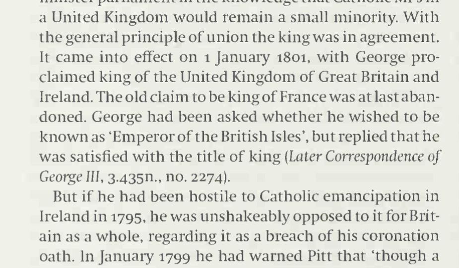
There’s also a frequently made and deeply ludicrous claim that “British Islands” is political but “British Isles” is geographical. Much more on that at the bottom, but it is absolute nonsense. Isles and islands are the same thing. And yes, Wikipedia has this completely wrong but it’s a very well defended position by a group of editors. If you doubt me I’ll give you the references and you’re welcome to try to change the relevant pages.
Then, given Britain and Ireland’s history, and specifically how the British project in Ireland often involved awfulness in Ireland, it is also a heavily-loaded political term. Plus, no matter what your claim about the historical background of the term, more recent history gets a say too, and more recent history gets to overrule previous history when it comes to the name of things.
One might claim, for instance, that Ukraine is part of Greater Russia using a historical basis or try even to make an argument that Scandinavia was really the West Russian Peninsula (the Rus were originally from Sweden after all and there are echoes of that term in Sweden still, plus Ukraine was the home of the Kievan Rus and has long been called things like Greater Russia)…..but you might not be popular if you did. Recent history gets a say.
And as mentioned already above, there is nothing geographically Belgian about the Belgian Congo. And I hope no-one would try to claim that the term was geographical, let alone “purely geographical”.
Basically, calling Ireland a British isle is pretty rude these days. It is frankly disrespectful to Ireland and Irish people in general. Potentially innocent the first time, not the second time. A warm Irish welcome can get very frosty.
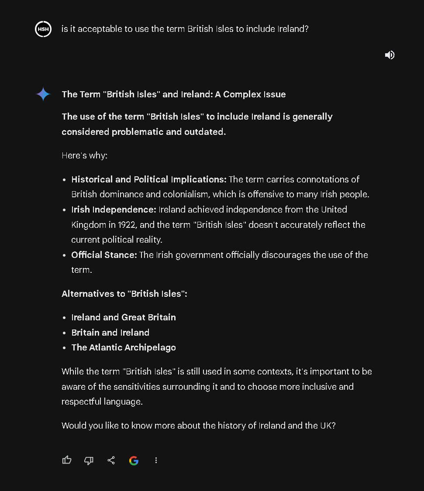
Now you might still be saying “But….but”.
One of the more graceful comments on the matter came in Norman Davies “The Isles — a History” (1999)
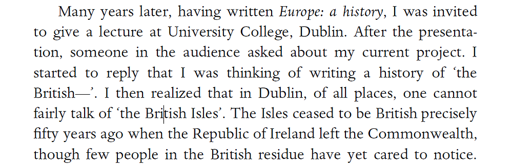
I have a few examples of less graceful but sadly very common responses at the bottom. Insult, usually. Along with some remarks about being uneducated.
There is a sadly all-too-widespread attitude among a certain type of British person in regard to the Irish. It’s not very internally intellectually consistent and it’s basically something like this.
You’re really British and you live in the British Isles and you’re the same as us, you stupid f*cking Paddy.
I have put a list of the common counter arguments at the bottom, with info to show that they’re nonsense. These are tried by politer but misguided people who still can’t get over the idea of Ireland not being in the British Isles.
You can jump down if you like and there is a lot of information there, but maybe you should read the rest of the story first. It’s more fun that way. And you get a crash course in Irish history on the way.
Oh, I put in AI links as summary references. Otherwise the reference list would be ridiculous. And maybe you’ll take an AI’s word when it’s summarizing classical texts. No-one is adding corrections to interpretations of the classical texts into their AI. Plus, I give a bunch of links to ancient and medieval writers in the “crap excuses” section below. If you get through that section with all the ancient and medieval writers and still want more reading then off you go!
Right…So…One thing at a time.
1. The early history and how the term has not been in continuous use for thousands of years
Yes, I know you keep hearing that the term has been in continuous use for thousands of years. It’s not true. Let’s look at the history from the beginning.
Some Greek voyagers (a fair bit BC) were on voyages of exploration to the ends of the world. The main voyager mentioned was Pytheas of Massalia in the 4th Century BC. There were potentially earlier voyages, but they’re even less well sourced. The original writings of Pytheas don’t survive either, so all we have is echoes of him through later writers.
According to later writers, Pytheas named what they thought was to the northwest of the European mainland something like the “Pretanic Isles”.
(This seems to have become “Britannic” later, in Latin, though with a different meaning, and it’s not even completely certain that “Pretanic” and “Britannic” are based on the same original word).
The islands were cold and wet and at the end of the world, in varying degrees. However, there was tin on one of them. That had been hugely important in the Bronze age and still was. Bronze had not disappeared even if we were now in the Iron age so trade was worth it. Other than that the islands were inhabited by peoples who were comparative savages.
The origin of “Pretanic” is debated too. It could be various things. It’s most often said to be something about “painted people”, with extensive later records of various people on Britain dying themselves blue with a pigment from woad. It could be an ethnic term, possibly a tribal name.
However, there is general agreement that it referred to something relevant to the island then called Albion and later called Britain/Britannia (and then Great Britain MUCH later).
“Pretanic” is often claimed to have applied to Ireland too but it seems highly unlikely it had any real reference to Ireland. (Ériu, Ierne, Hivernia or Hibernia at various stages.) People like Norman Davies (in his “The Isles — A History” have pointed out that the word “Pretanic” could only have come from Britain and Britons or from the mainland of Europe because Gaels in Ireland wouldn’t have used that word. The whole P and Q Celtic thing. In any case, it makes the term an exonym in Ireland from the beginning.
An interesting observation from all this indicates that in discovering the name Pretanike´, Pytheas of Massilia can only have been talking to P-Celts and not to Q-Celts. He obviously took his information from a P-Celt source either in Albion, or perhaps on the Continental shore.
“Pretanic” didn’t have any connection to Ireland from the beginning.
The earliest recorded names of Ireland in Ireland were things like “Ériu”, possibly based on a Celtic/proto-Irish term for “plentiful land”, with “Ierne” following soon after.
It is certainly likely that parts of Britain or peoples in Britain were indeed called something like “Pretanic”. The term “Prydain” has been in Welsh for a long time. Sadly there’s no local evidence of any of this because neither Britain nor Ireland had writing back then.
As used by Pytheas “Pretanic” also included an island called Thule.
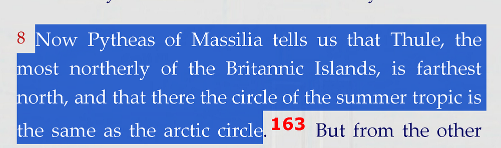
Now while later classica writers thought that Thule might be Shetland or the Faroes, the modern view is that Pytheas — the originator of the whole term — had gotten to Iceland.
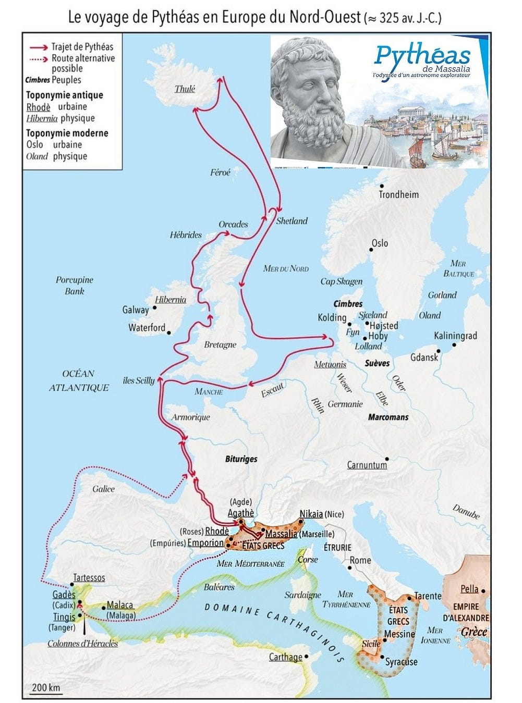
So, the original Britannic Island of Thule was almost certainly Iceland. Some still think Norway. But not the Shetlands or the Faroes. And the sources included many descriptions and details that Greek writers in the 1st century BC found unreliable and indeed incredible….but which make the identification of Iceland more certain nowadays. And, of course, neither Iceland nor Norway nor the Faroes are in the British Isles.
It’s fair to say that the Greeks were interested in Cornish tin and not much else. They likely took a word that meant something somewhere in Britain/Albion or that was uses by someone in Gaul about some of the people in Britain/Albion and just extended it with a wave of the pen. Neither they nor anyone else in the Mediterranean knew or cared much about Ireland. There’s no evidence these first Greek visitors even landed in Ireland at all.
Similarly, on the common interpretation of the word “Pretanic” being about body paint, there’s no evidence then or later that the people on Ireland at the time painted themselves. Other Celtic speaking people didn’t. And while there’s evidence of woad being deliberately grown in Britain (then and later), there’s no similar evidence of woad being grown in Ireland. No woad, no blue dye. No blue dye, no painted people. Interestingly, it seems no-one knows how to do blue skin painting with woad any more. Or whether it was ever possible.
So, the idea of “the Pretanic Isles” was quite possibly a stretch or simply wrong even then….certainly if it was supposed to include Ireland. And it apparently also included Iceland.
Other ancient terms were often wildly expansive and vague in their application, with the Greeks often taking one encounter with people and applying a term to everyone that it could possibly apply to.
“Barbarian” is a nice example. According to the Greeks, that was anyone not speaking Greek. Including the Persians, Egyptians, etc. But those people could not be seen as “barbarian” then or now in any real way. Similar with “Pretanic”. It’s quite likely it was wrong even then. And using an ancient Greek as a justification to call ancient or modern Egypt “barbaric” would be simply ludicrous. We see the mis-application of words in other contexts too. North American “Indians” are not Indians. They never were. It’s daft that people still call them that.
In any case, with Pytheas of Massila as the unreliable source, the ancient Greeks weren’t really sure what they’d found other than tin and varyingly barbaric tribes.
While the evolution of Brythonic Celtic and Goidelic Celtic into mutually incomprehensible languages hadn’t gotten that far when the original Greeks were passing in the 4th Century BC (Brittonic later became Welsh and Breton, Goidelic became the Gaelic languages Irish, Scots Gaelic and Manx), Britain and Ireland were already described by Greeks in the 1st Century BC as being quite different from each other (in unflattering terms for Ireland too).
They were increasingly speaking mutually incomprehensible languages; and they were evolving into different societies.
Even if they ever had been, by the 1st century BC the Gaels/Irish were certainly not being confused with Britons. And it was well understood that Ireland was not Pretanic/ Brythonic/ Britannic/British.
Even if someone said that Ireland was Pretanic/Britannic in the 4th Century BC, it had potentially never been an accurate description in the first place….and it wasn’t an accurate description by the time the Romans got to Britain.
We’ll get to the Romans further down, but let’s get back to these Greeks. They can be seen describing Ireland alongside and separate from “British isles” already in the 1st Century BC.
We have writings from Strabo and Diodorus Siculus. These are Greeks in the 1st century BC, at or about the time of the initial Roman contacts with Britain (Julius Caesar’s mini invasion).
While you’ll often see claims that they talk about Britain and Ireland being the “British Isles” — or the equivalent in Greek — it’s not actually true. Siculus talks about Britain and the islands of Britain, and never mentions Ireland. Strabo talks about Britain. And talks about Ireland. Strabo in particular mentions Pytheas’ description of “British Isles” as being unreliable and then talks about British isles and Ireland separately. There’s detail in the “crap excuses” section at the bottom.
A potentially important point about Siculus and Strabo is that they were exposed to the western and Roman world more than later Greek writers. Siculus was from Sicily and Strabo spent time in Rome. The had more change to be directly exposed to actual Roman knowledge about Britain and maybe even Ireland. Greeks who spent their lives in the eastern Mediterranean world, not so much.
Anyway, while it’s commonly said that the ancient Greeks included Ireland in these “Pretanic Isles”, that’s not the slam-dunk you may have been told it is. Even if we accept that they did include Ireland in these “Pretanic isles”, they also included Iceland (Thule) so using the ancient Greeks as the source of a modern geographic definition is sketchy at best…for that reason at the very least.
Onwards. After a first visit with Julius Caesar in the 1st Century BC, the Romans conquered most of Britain with Claudius in the 1st Century AD. There’s a lot more writing and a lot more detail once the Romans come around. And that’s increasingly true for Ireland too, even though the Romans did not conquer Ireland — or even try. They were probably not interested. Ireland was remoter and wetter and colder than the Roman province of Britain. Why would they bother?
Caesar talks about Britain and mentions Ireland. Separately. No collective term. No British Isles. (more below). Wikipedia won’t tell you this, of course.
In any case, the Romans did not use a collective noun like British Isles or anything like it. They knew quite well that Hibernia was different to Britannia and that the inhabitants of Ireland were not Britons.
Pliny, who wrote in the 1st Century AD, is often quoted as proof that the Romans did use the term “British Isles”, but he was actually writing about how the Greeks used to call Britain Albion and how they used to call all the other islands “Britanniae” when Britain was called Albion, i.e. in the past. That’s the past in Pliny’s time.
He then went on to describe Britain and Ireland separately.
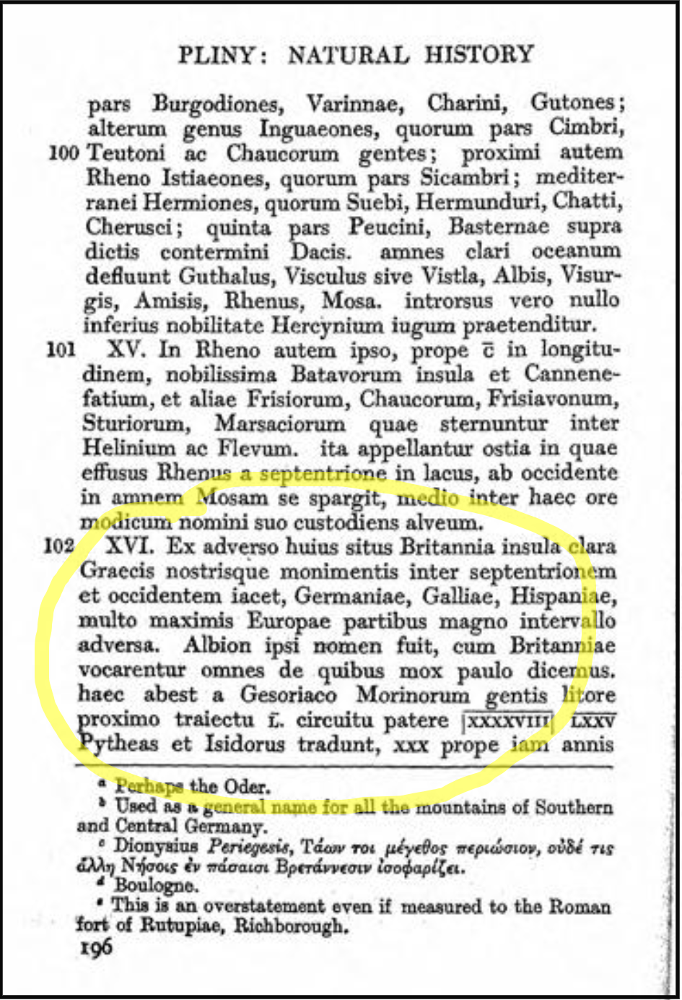
Here’s a translation/explanation of the Pliny section. Again, he’s basically saying “This is what the Greeks used to call things”.
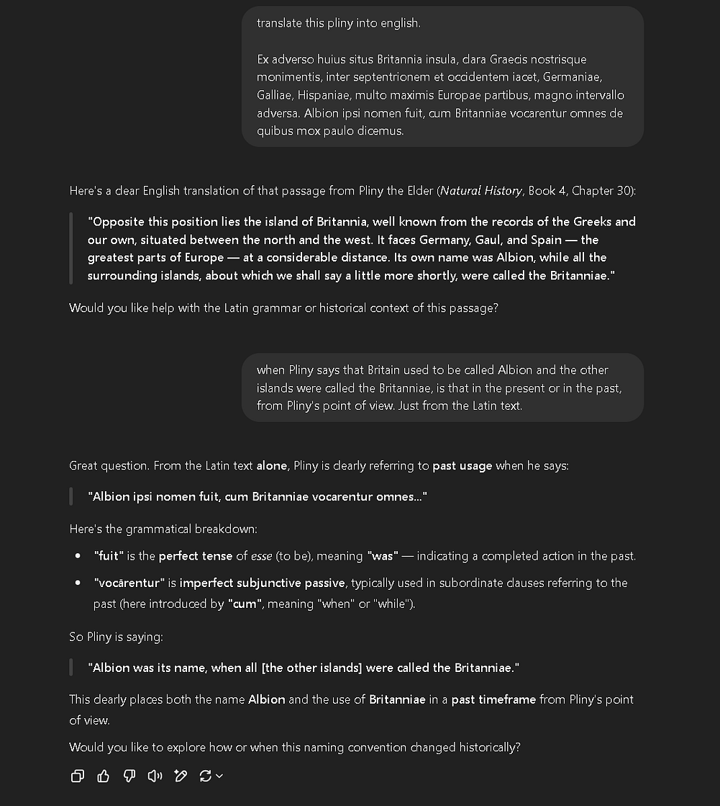
More specifically, he’s using an imperfect subjunctive passive….in a way that’s kinda similar to the modern “he would have been a friend of mine” construction….though the grammar is actually different. It means “he used to be a friend of mine”.
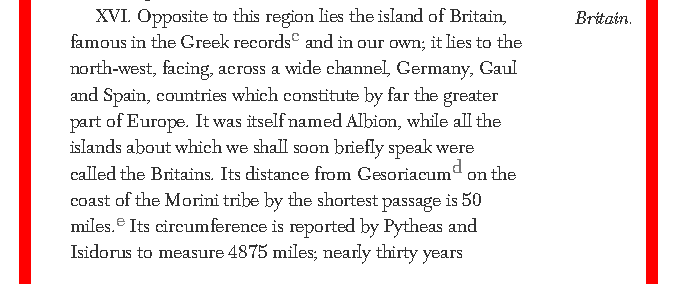
The text and translation match. Pliny was describing what things used to be called. He then switches to the present tense to describe Britain in detail.
Similarly, many people will also claim that Tacitus referring to “Britanniae” is him talking about the British isles. It’s not. It’s Tacitus talking about the different parts of Britain, the Roman province. There’s nothing about “insulae” at all (insulae is the Latin for islands). Have a look.
We’ll go through more sources later, but you’ll see that the Romans called Britain Britain (not Albion any more) and they called Ireland variants of Hibernia. The Iberian peninsula was Hispania, France and Belgium (mostly) was Gallia, etc. Lots of things had names then that they don’t have any more.
And again, Britain and Ireland’s Celtic populations had been and were continuing to diverge into different linguistic and cultural places. They were visibly different cultures and places and the Romans knew it very well. (plus, of course, the Celtic-ness of the populations is a matter of much debate beyond the fact that they spoke Celtic languages. That’s a separate discussion.)
But it’s clear that these supposed “Pretanic Isles” of the Greeks had morphed…with the “Britanniae” now being different parts of Britain. Things had changed….and that’s if you accept that it had ever been accurate to call Ireland Pretanic/Britannic in the first place.
Later Roman writers (e.g. Solinus in the 3rd century, or Orosius in the 5th century) also talk quite separately about Britain and Ireland. There is no collective noun for the islands.
You’ll often read people saying that the Romans did use a collective term. But when you go to look in the actual Roman texts, it’s not there (see the long “crap excuses” section down at the bottom of the article).
There is also a fairly common myth that the Romans talked about Ireland being “Little Britain” (Britannia Parva). No. That’s just not so. There were much later translations of Ptolemy (again, we’ll mention him later) into Latin that did that — in the early modern period. But no Romans used that term at the time.
Ptolemy does have to be mentioned. He’s a player. Writing in Alexandria in Greek in the 2nd century AD, he did call Ireland a “British Isle” or at least a “Pretanic isle”. Ptolemy, writing in Greek and apparently spending his whole life in Alexandria, becomes particularly relevant later. But the Romans and the western world paid no attention to Ptolemy at the time because he was unknown in the west — or at least his works were not available in the west — until the Renaissance (see Dalché).
Again, rather than trying to find references you’ll believe, just believe this.
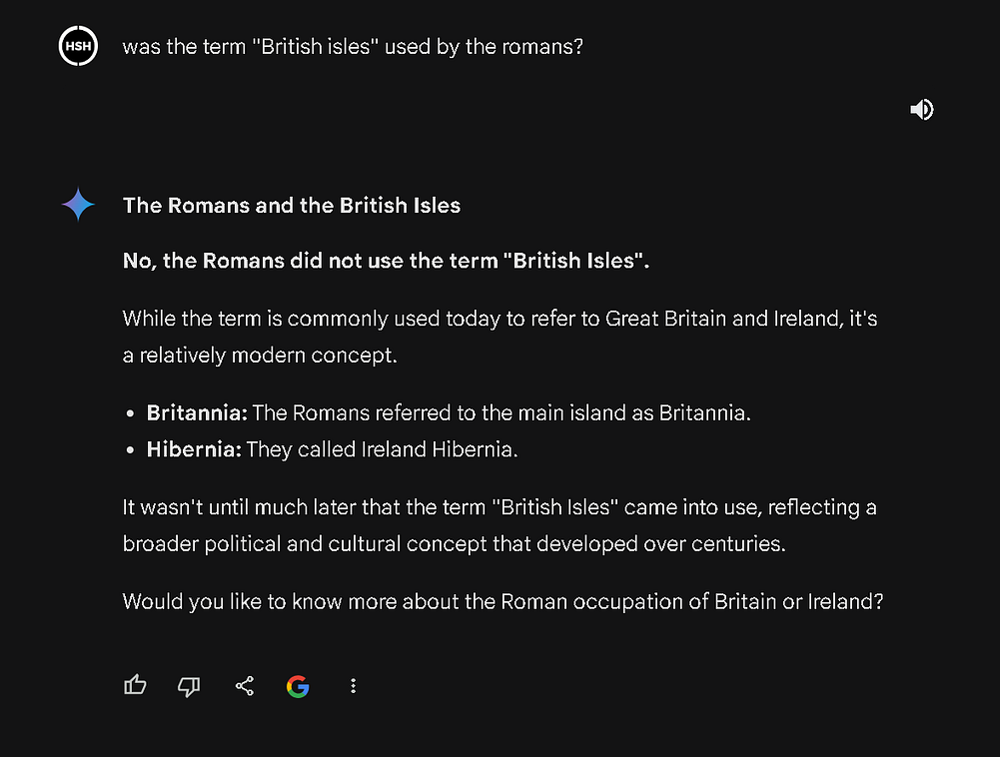
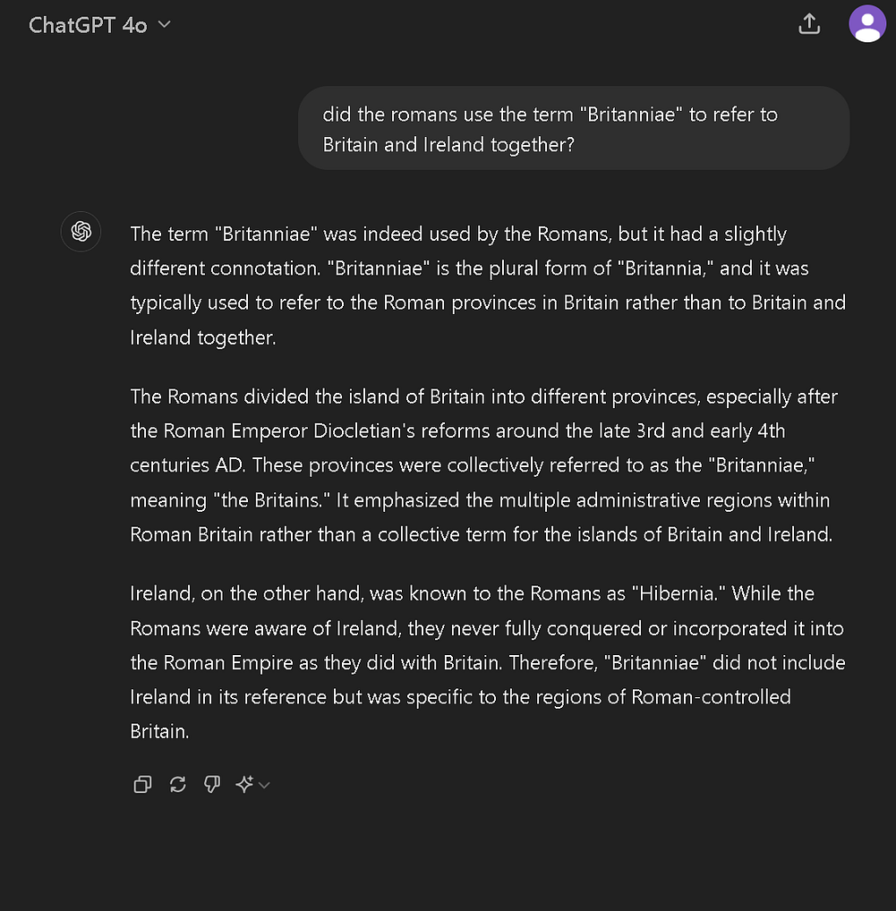
You can, if you wish, trawl through archive.org and let me know what you find. All the classical Roman and Greek writers are out of copyright.
So…After the Greeks, no collective term for the area was used for a long time. Certainly not in Europe. (again, see more in “crap excuses” down at the bottom)
But…back to the history.
The Roman presence in Britain faded out in the 5th century AD. St. Patrick had gone back to Ireland and brought Christianity and writing in the 5th century too, at about the time that the Angles and Saxons started moving to what became England. Ireland eventually became a haven of literacy in Northwestern Europe and someone later decided to call it “The island of Saints and Scholars”. Very nice.
But, between the Angles and Saxons and Romans coming and going, it all got very complicated for a while. The Vikings added to the chaos. The Scottii (from Ireland) invaded parts of what was not yet called Scotland and the Picts faded from history.
Centuries went by.
There was drama in Ireland with the Vikings and Brian Boru in 1014, and then somewhat later even more drama in England with the Normans and King Harold. 1066 and all that.
One key issue in the two islands was the Ireland failed to become a stable single state while Britain at least had a stable English Kingdom.
Normans came to Ireland in the late 1100s and there were various sorts of upset around their arrival. They came with distinctly superior military technology and lots of new ideas. After an initial surge, the power of the Normans in Ireland was pushed back a bit by the Gaelic lords, while the Normans (in both Britain and Ireland and indeed all over the place) also began to integrate as local lords.
The Normans eventually started speaking English in England and became “more Irish than the Irish themselves” in Ireland.
Cities and towns grew, the power of Norman lords or Gaelic lords fluctuated. Ireland was a divided land with loads of nasty petty warfare.
Then the Black Death passed through, arriving in 1348. It’s quite likely that the Black Death was a huge factor in reducing Norman and English power in Ireland, since the Gaelic Irish of the time didn’t live in towns as much. The Norman/English domination was slowed and often reversed. On top of this, English Kings were involved in trying to conquer France through most of this time. That’s where their focus lay. Ireland was a backwater.
Anyway….Centuries passed and all this time, Britain and Ireland were not called the British Isles.
Again, don’t believe me.
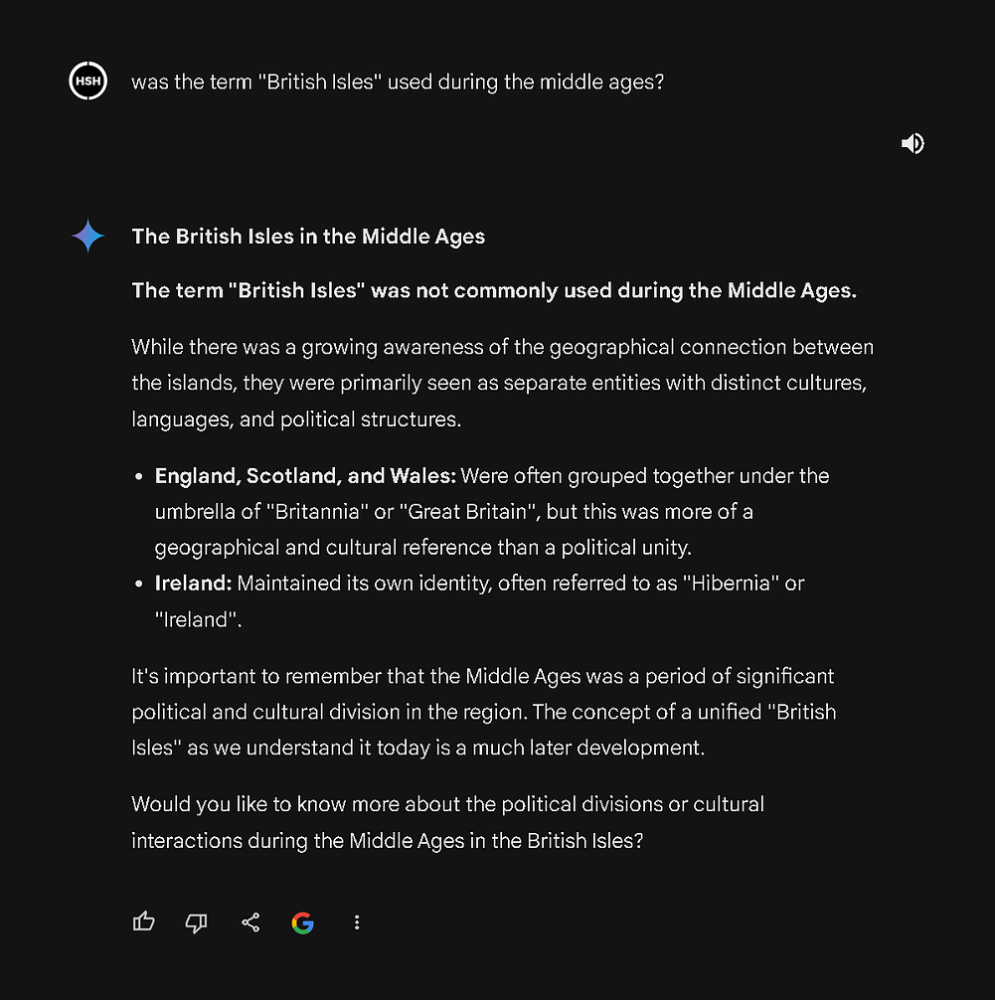
And, again, see more in “crap excuses” right at the bottom.
However, the middle ages eventually ended and the 1500s rolled around.
2. The Tudors did it
As the 1500s got started, Ireland was run by two main and by then only slightly competing forces….the old Gaelic Irish and the Norman-Irish.
Ireland was far from a single polity at the time. Imagine, perhaps, something like England before it was England, i.e. with Kingdoms like Wessex and all the rest of the petty kings and ever-changing alliances.
While the various Norman Lords in Ireland owed their allegiance to the King of England as their overlord (that’s a story in itself), and many of the old Irish Lords did, the ties were fading and Ireland was troublesome.
England itself had just been through the War of the Roses in the late 1400s and the whole period of the 1200s, 1300s and 1400s had seen loads of to-ing and fro-ing in Wales and Scotland. It takes whole books to describe it all. But by the 1400s English rule in Wales was secure and Scotland had secured its independence.
So, by the early 1500s, the Tudors (originally Welsh, remember, it’s relevant later) set about conquering Ireland properly.
It is important to remember that much of Ireland was not even vaguely under English rule when the Tudors set about their project. Even where there was nominal rule, control was was dubious. Even long standing Hiberno-Norman (Norman-Irish, perhaps) families like the Fitzgeralds had rebelled. English control in Ireland was not solid and Ireland’s culture and language were massively different to that in England or Britain. It was, perhaps, a bit like Wales a few centuries earlier.
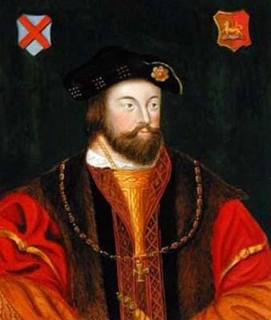
Beloved figures like Henry VIII were involved, even if that’s not him in the picture. Known for his tolerant and forgiving nature, Henry cracked down on rebellion and resistance in Ireland and succeeded in converting what had been the “Lordship of Ireland” to being “The Kingdom of Ireland” in 1542.
Control, though better, still wasn’t great. And now religion started to become an additional complicating factor. Henry did his whole Church of England thing and divorced his wife and England started to become Protestant. Ireland remained Catholic. This added another whole and wholly toxic layer to events.
Meantime the Spanish were trying to rule the world and they were trying to make everyone Catholic like them. Remember that they’d just recently kicked the last Moors out of Spain and had also been busy expelling or forcibly converting all the Spanish Jews. They were BIG into making everyone Catholic.
At the same time the Tudors were also trying to kick off the idea of Britain as a thing again. They were originally Welsh, so had a slightly different view of the world and by that stage the Kings of England had pretty much given up ideas of conquest on mainland Europe. The effective English presence in France had ended in the mid 15th century, and while the idea of conquering France had lingered into the 16th century, even Calais was back in French hands by the mid-16th century. There was no prospect of establishing kingdom on the mainland and the English Kings had come to accept that they would not be a continental power. But the Tudors had ambition and so did England. If not France, then something, surely.
Scotland’s politics was very complicated and while Henry VIII was also interested in conquering Scotland, he only tried the “Rough Wooing” you might hear about. There was a mini-invasion after Henry’s death, but nothing sustained.
At this time in history people took religion very seriously and this whole religious fuss was making things increasingly tense and complicated. Unifying ideas felt needed and were also potentially powerful.
Plus, while the Portuguese and Spanish were busy carving up the world, the English were trying to force a way into this discussion too, and in global rivalries you have to go big or go home. If a role as a continental power on the mainland and in France wasn’t possible, then what? Then where? Blocked in that direction, England and the Tudors looked for other directions.
West and outward were the other directions. This was the context behind the Tudors becoming more focused on conquering Ireland properly. It didn’t always go well. Ireland was heavily wooded and England wasn’t the all-powerful British Empire yet.
But it’s now that we get to the origin of “The British Isles”. There was also “The British Empire” and “The British Ocean” (an attempt to claim the North Atlantic, essentially), though that last term never ended up in common use in that way.
Facing the ocean, ideas of conquering Iceland were considered. The fishing grounds off Canada were well known (Cabot and co) and worth a fortune. North East and North West passages to Asia were being sought. The first English colonies on American soil were getting going. But still, Ireland was the main focus of it all for now because it was close by and still not under control. But as you can see, lack of ambition was NOT a problem.
Lining up with that ambition, there was a concerted effort to create some unifying national myths. The Tudors were looking at Ireland and Scotland and were starting to put together reasons why they should be in charge of those countries as well as England. The justifications for wider rule had previously been posited based on myths of great ancient British Kings. Arthur had supposedly ruled Britain, Ireland and Iceland in the past and British Kings would be entitled to rule those lands again. Similarly, Brutus had supposedly named and then ruled all of Britain. (a Trojan Brutus, not a Roman one)
Such myths were actually fairly widely believed. But more propaganda would be handy. Among others, a propagandist named John Dee was coming up with marketing and was putting together more justifications for the Tudor and English rule of Britain and Ireland. The terms above are his. “The British Isles” in particular.
It appears first in English in a book in 1577. And here’s an important point to remember…English in a reasonably recognizable form had been around for hundreds of years by then. If it had been a term in constant use, it’d have appeared before then, right? Well, it wasn’t in use. And hadn’t been. But it was great propaganda, mind you.
It really was a great idea. We have to give him/them credit. It was an idea which could claim ancient origin (the Greeks, remember…they were very back in fashion at the time) even if it hadn’t been in use since then. It was an overarching identity that could claim to unite Scots, English, Welsh and Irish under the rule of one King. Or, at least as far as the English, Welsh and Irish were eventually concerned, one Queen.
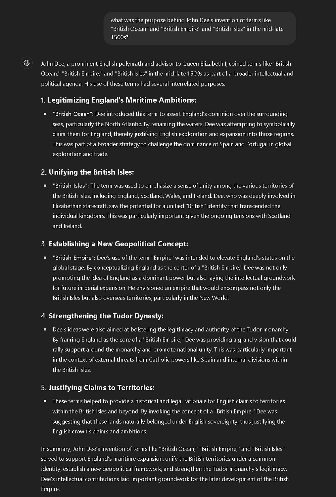
Here’s the first pages of the Introduction of the book “Charting Empire”, which describes the intermingling of geography, politics, propaganda and imperialism.
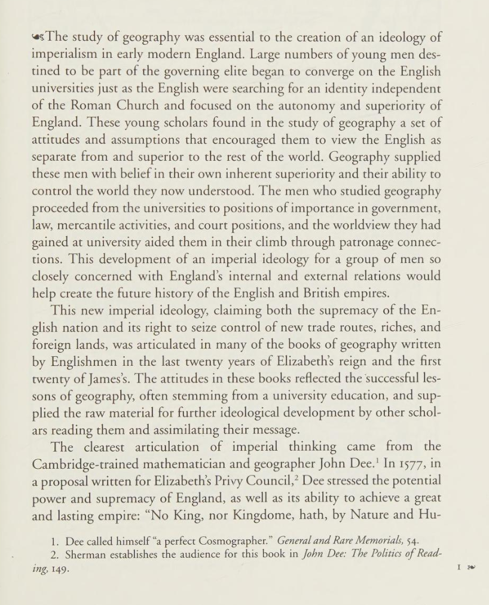
It’s worth having a read of the whole introduction. It’ll dispel any idea you might still have of the politics of it all….the politics of geography.
In any case, it was Elizabeth I by now. Henry VIII had died, and there had been another flurry of nastiness over religion. Several more heads were chopped off, and Elizabeth I of England ended up on the throne in 1558. A Queen for the key period rather than a King. But the same plan, more or less. And now also an actually Protestant Queen rather than merely a frustrated King looking to bypass Church rules so he could have an heir.
Anyway…back to Ireland.
The conquest of Ireland still wasn’t going that well for England and the Tudors, and now it was Elizabeth rather than Henry.
Several Irish lords had decided that they’d rather be in charge in Ireland on their own terms and not as sub-Kings under Tudor rule. It was a big bet with complicated origins. While England was clearly the wealthier country, the asymmetry wasn’t as huge then as it is now. Still, the Irish Lords (particularly in Ulster) knew they couldn’t win without outside help and started to work towards getting Spain to back them.
These Irish lords needed guns and money. Any kind of support they could get would help. They were busy using both the newly relevant religious angle to get support and also using the idea that Ireland could be a backdoor for Spain to use to invade England.
The backdoor idea appealed to the Spanish because they had long been interested in somehow allying with England. Failing that, maybe they could invade and take over. They weren’t sure so they tried both at various times. The alliance idea fell short because marriage with Mary ultimately failed and Elizabeth turned out not to be the marrying kind. Then invading through the front door hadn’t worked out too well. The Armada and all that.
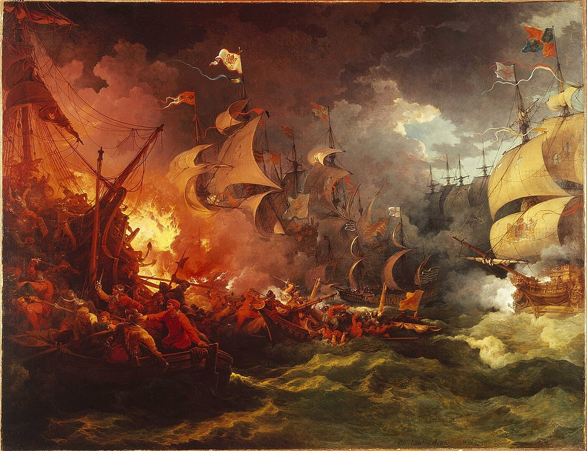
Ireland, thought the Spanish, might be a nice way around the back. And the Irish Lords were still fighting all this time. By the end of the 1500s much of Ireland was under Irish control. So the Spanish decided to get stuck in and help the Irish.
Then, to make a long story short, the Irish and Spanish made a monumental mess of it at the Battle of Kinsale in 1601 and that was essentially the end of that.
All of a sudden it was over.
The Irish were in disarray and the Spanish were losing interest in expensive misadventures.
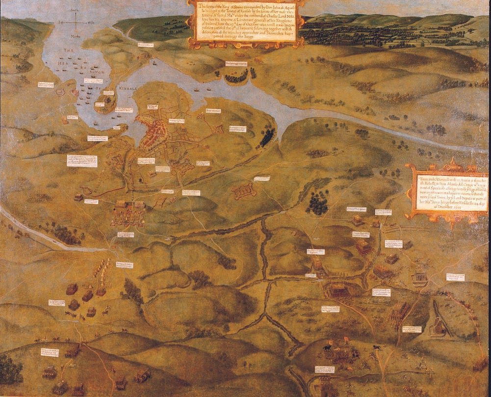
Tudor/English and now increasingly British/Stuart ambition however, had not wavered.
Control of Ireland was total within in a few years and the term “The British Isles” had stepped onto the stage. Gaelic and Norman Ireland was over, done, finished.
And again, this thing “The British Isles” was new. It was not ancient. It was new.
Furthermore, whatever about the term “British” being applied to Ireland by some ancient Greeks and then vanishing for a millennium-and-a-bit, the term “British” was now being applied to Ireland as part of the justification of a pretty serious conquest. And the term had never been locally used for anything except that other neighboring island of — well- Britain.
So, from an Irish point of view, it was very clear that the term was political. It was being applied in a conquest and alongside a territorial and cultural take over.
And the whole point of it from the British side was explicitly political too.
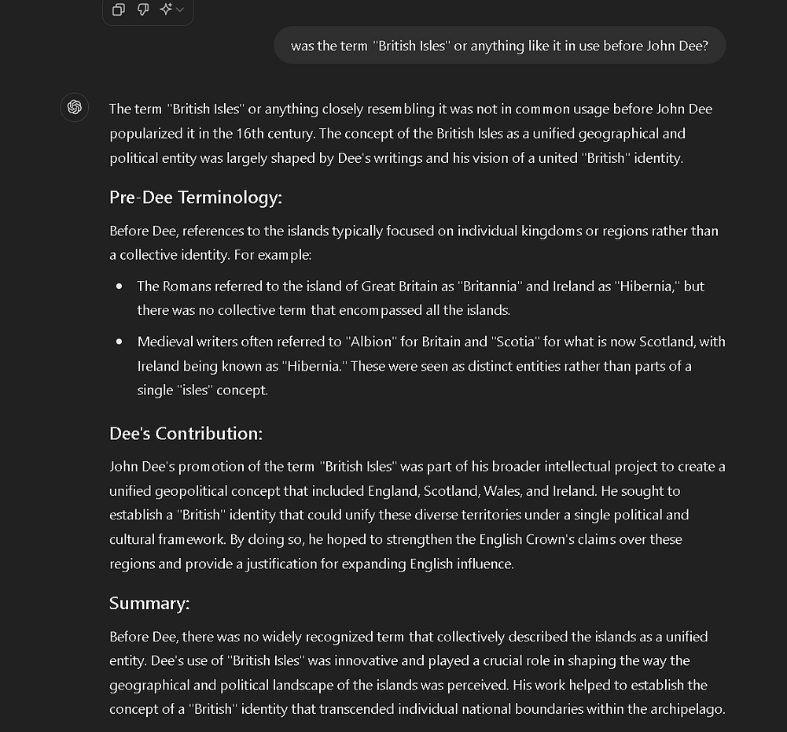
Here’s another summary of where and why the terms originated. And another. Again, one thing people complain about with AIs is that they read. Yes. They read.
Or there are people who write about the evolution of the term “British” and conclude things like this….
“In the 17th century, being British only had meaning as a colonial identity , when it was used to denote the projection of English and Scottish interests overseas.”
Guess where “overseas” included.
Or, also interestingly…
“Instead, in those records which still exist of material published in Great Britain and its dependencies up to 1800, the term British was mostly used in relation to Ireland in the first half of the 17th century.”
Or even “ British, by its very definition, is an imperial term, not a national one ”
Applying the term “British” to Ireland was not about geography though — again — the propaganda about “purely geographical” has been remarkably effective over the years. A nice summary here.
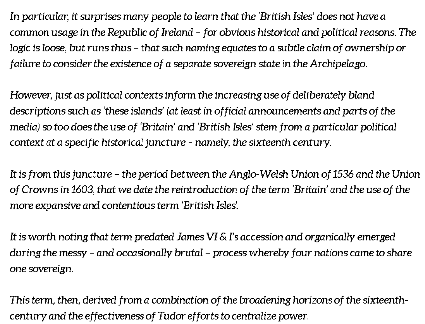
3. Irish as a subset of British
The following centuries were pretty grim for Ireland. Essentially, the Irish and the Catholic Irish in particular backed the wrong horse every single time over the next few hundred years. Every single time. Daft bastards, really.
First they backed the Stuarts over Cromwell.
Cromwell is often ranked as the greatest Englishman ever. He’s generally despised in Ireland so you can imagine that being against him had not been a good choice. That was the mid-1600s.
Then they backed the Stuarts over William of Orange in the late 1600s.
That ended with events like the Battle of the Boyne and the Treaty of Limerick. They’re so complicated I’m not even going to start. But again, most of Ireland made a bad choice.
However, across all this time, the English and British project was to crush any trace of the old Irish culture and power structures and to make Ireland British.
In addition to that, most of the Irish were Catholics and the level of oppression is perhaps best described by Orwell.
Imagine a boot stamping on a human face — for ever
Irish nobility continued to flee to France and Spain (Hennessy cognac, for instance) and the oppression continued. The Penal Laws were introduced to keep the Catholics down and the Irish people descended in large part into a peasantry and poverty that is hard to even imagine today. Leaderless. Lost. Pretty much beat.
There were spasms in the late 1700s and early 1800s but they didn’t add up to much in the end.
However… these spasms did prove that the idea of Ireland ruling itself was still around. And they involved Irish people of all religions.
One interesting example turns up in the lead up to the 1798 rebellion. The main leader was a Dublin Protestant. He founded the United Irishmen in Belfast to pursue Irish independence. Wolfe Tone was his name. An organization founded by an Irish Protestant in Belfast that aimed to pursue Irish independence, by military force if necessary. Those aren’t words we think of very often — at least in that kind of combination.
The French briefly invaded Ireland (look up “The Castlebar Races” for some amusement) but they didn’t last long either.
Then the last trace of Irish political independence — which was only nominal anyway — was eliminated with the Acts of Union that came into force in 1801 and The United Kingdom of Great Britain and Ireland was created.
Ireland was British.
Irish culture was repressed if not entirely crushed. Ireland was, indeed, arguably a British Isle. Irish had essentially become a subset of British.
But still not quite . Even at that moment it was “The United Kingdom of Great Britain and Ireland”. Ireland still got a mention. Perhaps no more than a fig-leaf to cover the rape, but still something. I have read commentary about how it might have just been called “The Kingdom of the British Isles”, but that the odd constitutional positions of the Isle of Man and the Channel Islands militated against that. I’ll see if I can find a source. There were, as mentioned above, discussions about making King George the “Emperor of the British Isles”.
But, bottom line, during the 1600s and 1700s and into the 1800s, the term “The British Isles” was indeed in common use and essentially accurate use.
4. But then…the Famine… and onwards to independence
If anything, the 1800s were possibly worse in Ireland than the 1600s or the 1700s. Hard to foresee, but ultimately true.
While political changes in Britain meant that oppression of Catholics was easing across the UK, there was no flexibility when it came to British control in Ireland. The sentiment that was behind the risings in 1798 and 1803 was taken up using peaceful means by one of the greatest men in Irish history. Daniel O’Connell. He’s worth looking up separately. The Great Liberator. Flawed, but a great man.
He ran a massive and popular campaign to reverse the 1801 Act of Union across the 1820s and the 1830s and into the 1840s. It was a big deal in Ireland. However, his peaceful attempts at reversing the Act of Union were fatally damaged when a planned “Monster Meeting” was threatened with violent repression by the government and the campaign fell apart. O’Connell was stumped. If peaceful means could be violently repressed by the government…O’Connell didn’t have another tool in his bag. Above all, he wanted to avoid violence. The UK government had no such qualms. O’Connell and his movement fell apart in confusion. There seems to be pretty strong consensus that, at the time, the UK government would have had no problem with violently putting down O’Connell’s meetings. Peaceful methods do depend on the government not being prepared to just kill people.
Then the Famine came.
The Famine is a grim story. It wasn’t a deliberate act, but the UK government did damn near as little as it could get away with doing. While the same kind of harvest failures meant people went hungry in Britain and across Europe, millions of Irish people died and millions more emigrated. Awful awful awful. And all this in the richest country in the world at the time. The United Kingdom of Great Britain and IRELAND. United. Supposedly. And Ireland exported food through the whole thing.
To illustrate the non-united nature of the UK, the Great Exhibition took place in London just a couple of years later in 1851. That was complete with actual crystal palaces, and is often regarded as the peak moment of British Imperial prestige. Ireland, meantime, was still a disaster zone.
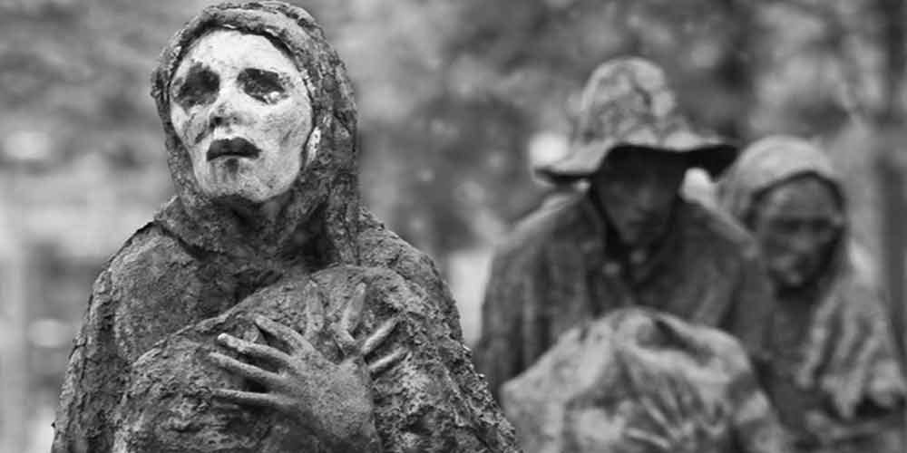
It should, surely, have been the end of the end of the end of any idea of Ireland. But it wasn’t. For whatever reason, it wasn’t.
In the decades afterwards, the idea of Ireland revived again. There was another failed military rising in 1848. There were land wars. There was the Irish cultural revival. There was a renewed peaceful and constitutional campaign for Home Rule for Ireland.
Somehow the idea of Ireland as Ireland persisted. The idea of Ireland as a thing of its own persisted. I have no idea why, but it did.
All the while, British representations of the Irish could hardly have been more negative.
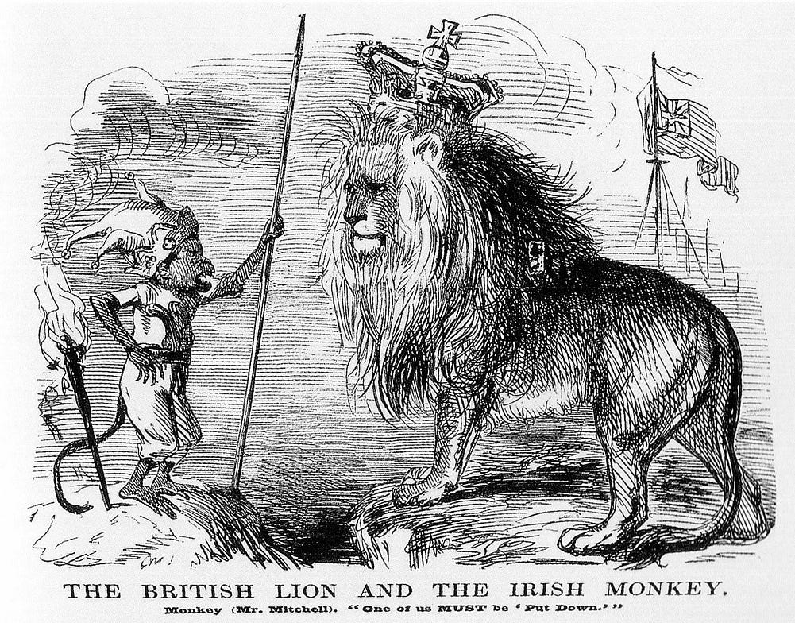
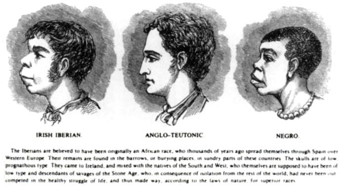
That revival and the revived desire for self-rule was repeatedly frustrated in parliament in London, particularly by the House of Lords. There was increased agitation and concern by Irish protestants about Home Rule. It’s all a sad and complicated story and one which dominated British politics for decades.
Still, Ireland and Irishness revived. Irish sports revived. Irish literature exploded. The idea of Ireland itself revived. There was continued democratic push for Home Rule, despite repeated failures.
Then we got into the early 1900s and, unhappily, instead of Home Rule and a transition to peaceful democratic autonomy within the UK or within the British Empire and with or without an eventual transition to being a Republic….. the world instead got WWI and Ireland got the Easter Rising, the War of Independence, independence itself, and the apparently compulsory post-independence Civil War. None of it was pleasant. None of it should have been necessary. Lots of people died.
Many (most?) British people are almost entirely unaware of any of this, despite the fact that it was their country, supposedly. Ask them about the Curragh Mutiny or who brought the first guns from Germany into Ireland and they’ll know nothing about the mutiny and will get the answer wrong about German guns.
In any case, instead of some tedious democratic process, the United Kingdom of Great Britain and Ireland ended in flames and death.
5. A new start?
But Ireland began again.
And the UK continued as the United Kingdom of Great Britain….and Northern Ireland.
The new Irish state started first as the “Free State”, within the British Empire. Then as the Republic of Ireland. But it was operating as Ireland, either way. Initially in a limited way but with autonomy increasing gradually — both politically and economically.
Even Northern Ireland operated as its own very Irish thing. No-one in Britain cared that Northern Ireland ran as a rather unpleasant little sectarian statelet. Northern Ireland was pretty purely Irish, in its own nasty way.
And without a significant Protestant population in the Free State/Republic, Ireland spent a few decades trying to become a rather repressive Catholic-dominated economic backwater.
The 1920s saw Ireland struggling to operate as a country. The left overs of a civil war and it was still a poor country. The 30s weren’t great either, especially with an economic war on top of that. Or a skirmish at least, with Britain.
Then what was called WW2 in the rest of the world was called “The Emergency” in Ireland. Ireland stayed nominally neutral but was helping the allies as much as it could. (this is true despite some of the nastier stories you might hear)
The 50s saw mass emigration to the UK…but in the 60s Ireland stopped trying autarky and started to look at the rest of the world for markets. Things started to look slightly rosier. And the population started to recover for the first time since 1845. Yep. Let’s call that 120 years of population decline.
Sadly, then the Troubles started, which REALLY didn’t help. Monstrous behavior all around from various terrorist groups and often badly-behaved security forces. And cack-handed politicians mostly doing the wrong thing again and again.
But these bad times too, they passed.
It’s hard to place when but — having had a limping start in the 1960s before the Troubles — at some stage in the early 1990s the idea of Ireland as just a normal country got into people’s heads.
Ireland shook off the chip on its shoulder. Irishness didn’t have to include “and it’s not British/English”. There had always been Irishness but now it was more confident and relaxed. Whether coincidental or not — and indeed no matter which direction the causality went — the gradual and then final end of the Troubles in Northern Ireland mattered a lot too.
Ireland was reborn. And now really not as a subset of Britain and Britishness, but as its own thing. This hadn’t happened for a LONG time.
(we can talk about Ireland and the EEC/EU another day)
6. Might Ireland have stayed British?
Here’s a thought. A bit of a diversion, but bear with me. Or skip ahead to section 7. Up to you.
The United Kingdom failed as a political project because instead of incorporating and accommodating Irishness, it tried to crush Irishness and failed.
The UK still exists in a small way with Northern Ireland but it’s essentially back to being The Kingdom of Great Britain. Not the UK, not really. It’s Great Britain plus “Oh yeah. Northern Ireland. Yeah. I forgot about them.” It’s more 1707 than 1801.
I can only imagine how disrespected Northern Ireland Unionists feel by the attitude of many people in Britain to their part of the UK.
The UK’s Olympic team has “Great Britain” on their shirts. The America’s Cup team and many others are “Team GB”. The ISO country codes for the UK are GB and GBR. Northern Ireland is apparently an irrelevance. It seems Northern Ireland is a pain in the neck for Great Britain and not much more, really. The lip-service-and-nothing-more paid to Northern Ireland unionists during the Brexit debates was illustrative.
But the union might have thrived. A union of Britain and Ireland makes sense in a lot of ways. Two islands off northwest Europe, facing the ocean? Fertile land? It could make sense.
But it failed because it wasn’t really a union. It was a takeover. It was a conquest.
And the conquest was persistently and repeatedly resisted. Resisted in many ways beyond all logic and sense, but people are funny like that. Possibly Irish people in particular. Something in the water.
Perhaps the main reason for failure was BECAUSE it tried too hard to make Irish a subordinate subset of British.
It failed because instead of making John Dee’s original propaganda idea of “The British Isles” a union of equals or at least partners, it tried to make the British Isles in a manner more akin to that described well by an ancient Briton…”They make a desert and call it peace”.
Perhaps that failure to incorporate instead of dominate was because the English and British governments at various times were — like most of their contemporaries — religious to the extreme. If the whole Catholic/Protestant/British/Irish thing hadn’t all been mixed in together could it have worked? Maybe. If London had thought “Hold on…this religion thing is causing too much grief. We should go easy on that”, could Britishness and Irishness have merged over time. It’s a moot point now.
But in the end the UK failed because it allowed the famine. It failed because instead of welcoming Home Rule and the prospect of peaceful alliance and democratic change, it persistently refused to allow any change in Ireland and it persistently drove up tensions in Ireland until we had the UVF in the north and the Volunteers in the rest of the country.
It failed because it executed the leaders of 1916, alienating a population that had until then opposed the leaders of 1916. It failed because it underestimated the Irish led by Collins and de Valera and the rest.
It failed because instead of absorbing Ireland happily into a new union, it kept trying to completely crush Irishness and in failing to crush Irishness completely it failed in its own primary purpose. It failed because it could not understand that, somehow, people in Ireland refused to consider Irish as a subset of British.
It failed because it set Britishness against Irishness. Not always and not completely, perhaps. But far too much.
The United Kingdom of Great Britain and Ireland didn’t have to fail, but in the end it did fail.
It’s plain to see that most Irish people nowadays think that an independent Ireland is a better idea, but it’s still possible to see how a United Kingdom of Great Britain and Ireland could have been cool. But it wasn’t. It really wasn’t. Not for Ireland.
There were other paths that could have been taken, many times. But they weren’t taken. So now Ireland is no longer in the UK, bar a handful of counties in the Northeast.
And in the last several decades Ireland has moved away from being economically and culturally dependent on Britain to being its own thing.
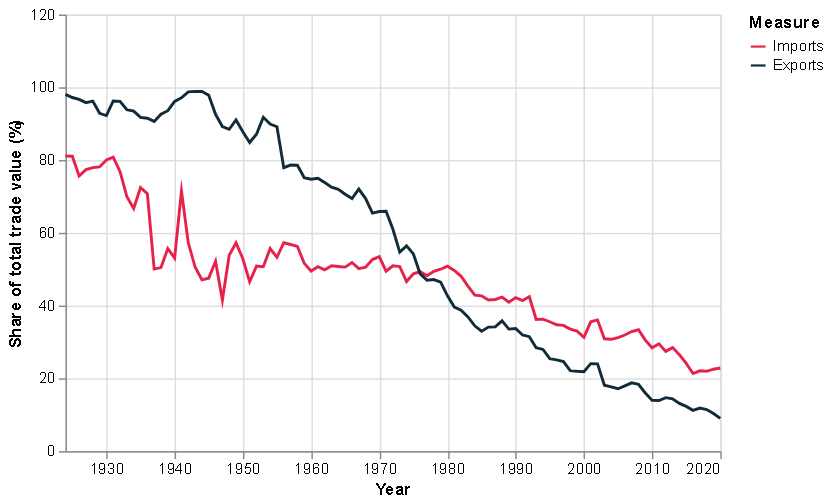
For sure, Ireland is a subset of Europe and a subset of the world, but it’s no longer a subset of Britain or of Britishness. Those trade numbers are downright amazing for a country like Ireland and its richer much larger nearest neighbor.
Ireland is no longer British.
Anyway! Back to the main story.
7. Ireland is not a British Isle because…
All the above is historically interesting but the argument could be made that it’s also entirely irrelevant. Even if Ireland had been a happy British isle for centuries, things change.
Today, Ireland is not a British isle. The term “The British Isles” can’t be separated from its political nature and political implications.
It is as ludicrous as claiming that Ukraine is still “Little Russia” or that Ukraine is still on “the Russian Steppe”. No-one could deny the close geographical and historical ties between the two countries or the historical connection of “Rus” to Ukraine. But more recent politics matters.
And in Ireland and Britain’s case, we know that the term was a political term from the beginning. And it’s perhaps even more especially important since the political project of Britishness essentially included the attempted elimination of Irishness. Perhaps quite like Ukraine and Russia.
Names change too, no matter how they started. History is complicated and the results of history change what we call the geographical features around us. The islands haven’t moved in relation to each other, but the relationships between the islands have shifted all over. And the names of things reflect the relationships between them and to the rest of the world.
Today, Ukraine is not part of the Russian Empire. It was for a long time. At one time the Russian steppe stretched from Hungary to China. The steppe is still there, but Ukraine is not on the Russian steppe any more. It’s the Eurasian Steppe now, unless you’re talking specifically about the part of the steppe that’s actually in Russia. Things change.
The North Sea used to be called the Germanic Ocean. Ceylon is Sri Lanka. Burma is Myanmar. Bombay is Mumbai. Breslau is Wroclaw. Maui is not in the Sandwich Islands. The Masurian Lakes are not in East Prussia. And so on.
Things change.
New Zealand may someday change its name to Aotearoa, which is the original name in Maori. And if it did, you couldn’t reasonably stand in Australia and go “But we’re used to calling it New Zealand so we’re going to keep calling it New Zealand and screw anyone in New Zealand who doesn’t like it.”
(And hopefully nobody would try to claim that the term ‘New Zealand’ was a purely geographical description. Calling something a river or a mountain — that’s purely geographical. The name of the river or mountain? That’s political.)
Things change. Ireland is no longer a subset of Britain and its relationships with the rest of the world are no longer dominated by being part of something British.
So even if the name “Pretanic” had actually accurately applied to both Britain and Ireland (it probably didn’t); even if the Romans had kept calling Britain Albion and all the islands in the area the Britanniae (they didn’t); even if the world had called the islands the Britanniae or Insulae Britanniae through the middle ages (it didn’t); even if the Tudors and subsequent English and British rulers had behaved less brutally (they didn’t); even if Ireland hadn’t become independent until 1992 instead of 1922…..it doesn’t matter. Things change.
Ireland is not a British isle. Even if it was, it’s not any more. Things change.
Various atlases and organizations used to draw maps or write books with the term. Now lots (not all) use the term “Britain and Ireland” instead. Things change.
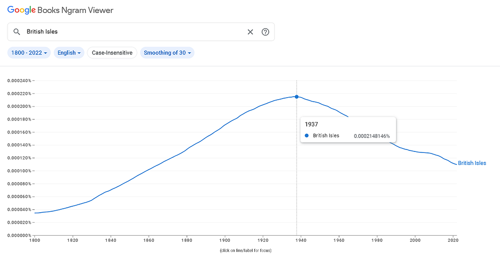
So, even apart from the Faragist loons, remember this.
Ireland is not a British isle.
So please don’t call Ireland part of the British Isles.
If you like the phrase “The British Isles” then have the courtesy to add “and Ireland”. Or keep it simple and go for “Britain and Ireland” or “Ireland and Britain”.
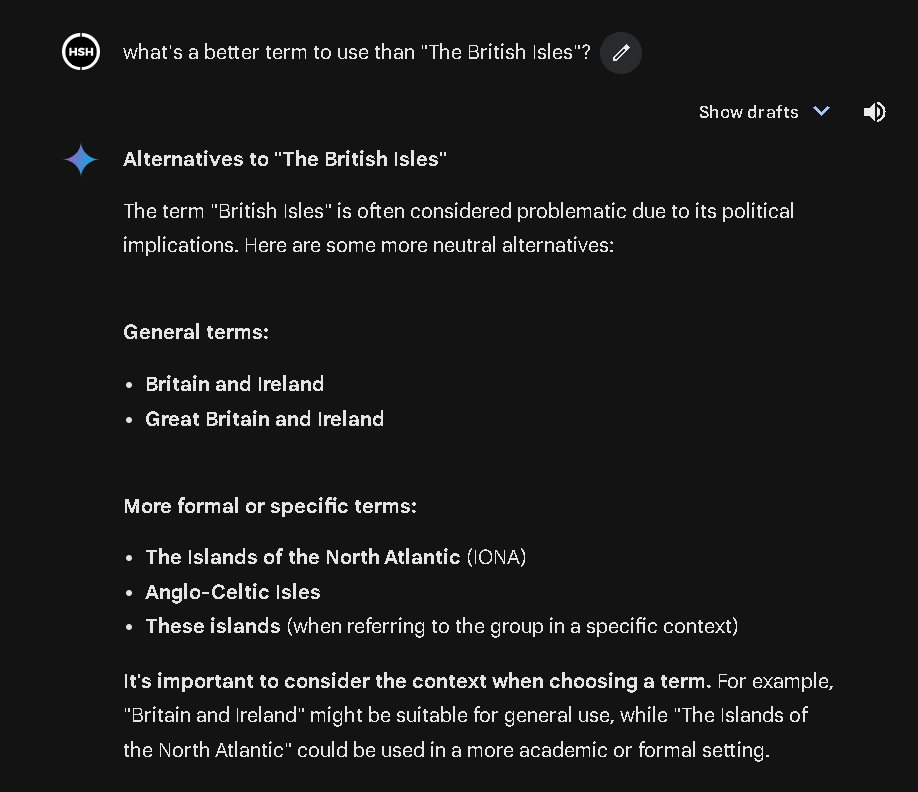
And if, like many people, you keep insisting that it’s a neutral geographical term, you’re just wrong. The names of things are political. Always. Particularly in this case.
Or maybe you understand that it is a political term but you’re this guy, happily and self confidently ignorant that things have changed.
Either way, please stop. It’s not nice. Don’t do it.
Thank you.
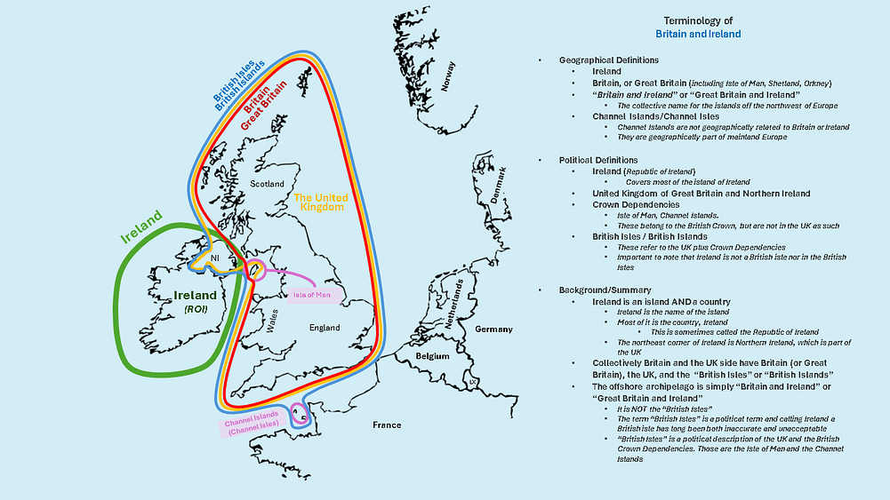
Appendix 1 — Stupid Counter Arguments (crap excuses)
1. It’s a purely geographical term
It’s not. It never was. Read the article above.
Even if you don’t believe that its effective origins in the 1500s and 1600s were as a political term, it’s clearly still a political term today. Irish people will tell you they regard it as political. That is, by itself, enough to make it political.
Then there are little things like King Charles of the UK and the governments of the Channel Islands saying that the Channel Islands are in the British Isles. They’ve been in the British isles for a LONG time. Since the beginning.
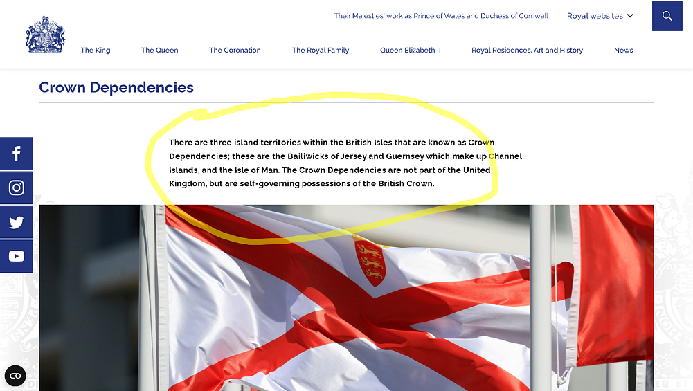
Now, whatever else you think about them, the Channel Islands are geographically part of France. They’re NOT part of whatever you want to call the archipelago of Britain and Ireland. They’re physically and geographically part of France. They are politically British.
It’s therefore doubly clear that the term “British Isles” is political. It cannot be a “purely geographic term”. And if you’re telling me it is, go tell King Charles first and get back to me.
By the way, the idea that the Channel Islands are not in the British Isles is widely used by people trying to claim that Ireland is in the British Isles. It’s a bit mad, really.
Their problem is that if the Channel Islands are in the British Isles (and they are) then the term can’t be purely geographical. If it’s not a geographical term (and it’s not) then it’s perfectly logical to have to admit that Ireland is not in the British Isles any more….and they’re desperate that Ireland should still be in the British Isles.
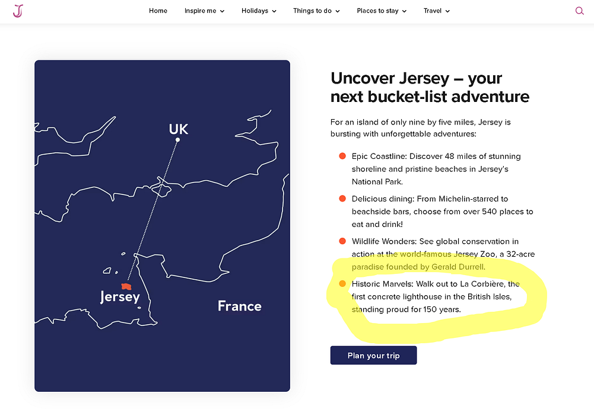
Can you get your head around that one? I don’t get it. Other than a last claim to be powerful, I don’t get it.
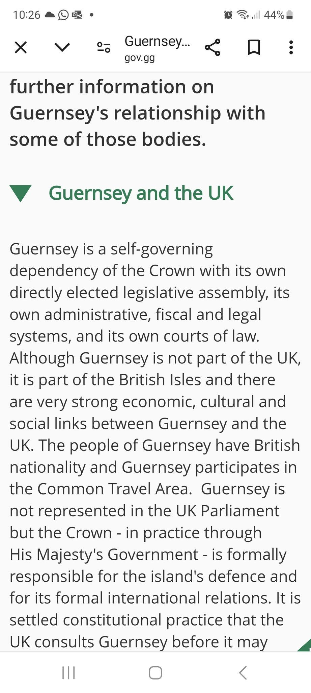
Plus, the names of things are (as mentioned in the article) always political. Calling something a river or mountain or sea. That’s geographic. But then the name of the river or mountain or sea. That’s usually political.
You might try to explain how some of these terms below are purely geographical and others are not. In reality few names of anything are “purely geographical”. It’s a nonsensical idea.
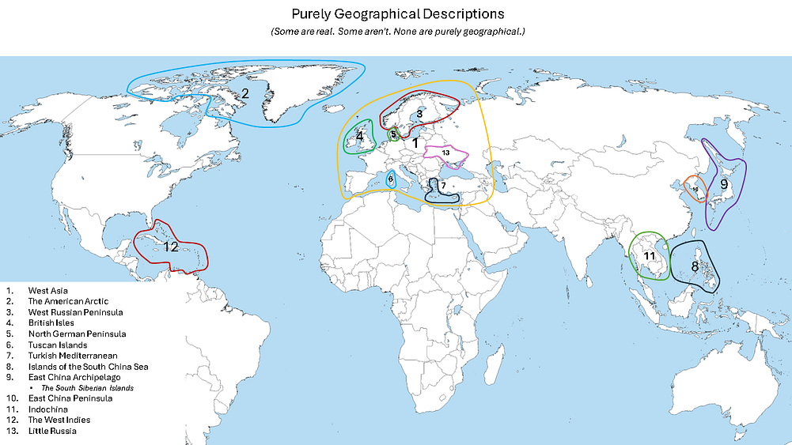
2. It’s been in use for thousands of years.
If you read the note above, you’d see that it hasn’t. Effectively, it originates in the 1500s and into the early 1600s. (this section is long….advance warning)
The OED gives the first use as John Dee in 1577. Dee, as mentioned, was a Tudor propagandist (and many other things).
The AI links above (which are a starting point) tell you that neither the Romans nor the Middle-Ages used the term. It was resurrected in the 1500s as being a term that could claim to have ancient roots because that suited a political project.
You’ll hear people say “But Pytheas” or “But Ptolemy”….
It’s common understanding that some ancient Greeks used terms to describe Britain and probably Ireland and Thule (Iceland). Pytheas is the main source claimed, even though we don’t have his text and later Greeks expressed serious doubt about his reliability.
We also have Greeks talking about Britain and Ireland in the 1st Century BC. This is at about the time the Romans were approaching Britain, and several centuries after Pytheas. And these Greeks talk about Britain and Ireland quite separately rather than using a collective “British Isles” type term for Britain and Ireland. And we even have Greeks talking about “British isles” and Ireland as being separate things.
First, let’s take Diodorus Siculus, in the 1st Century BC. He talks about Britain in his Bibliotheca Historica , Book V, Chapters 21 and 22 and describes it as a triangular island. He talks about the tin trade, and about St. Michael’s mount in Cornwall and about other islands near Britain. He mentions that Caesar was made a god because he brought Rome as far as “the British islands”. Which he did. And that didn’t include Ireland. Never included Ireland.
Siculus never mentions Ireland, and the islands of Britain that he mentions are clearly small islands of Britain like Wight (Ictis) and perhaps St. Michael’s Mount. All there is beyond that is a general mention in the beginning that there are many islands in the ocean and that Britain is the biggest.
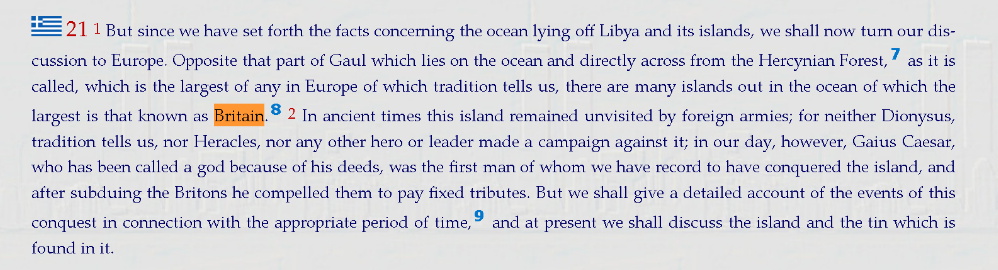
Siculus is one of the main “echoes” of the original Pytheas of Massila, but claims that he includes Ireland in some collective “British Isles” are mostly retroactive fitting. The claims are made, but they’re not sustained by the text unless you already believe that what the text says.
The Greek text of Siculus can be seen here (click forward through the chapters) and an English translation can be seen here.
Note that you will often see claims that Siculus did describe Ireland…calling it “Iris“.
Freeman (link below) says that the idea that Siculus described Ireland is wrong, since the word “Iris” used once by Siculus is actually quite different from the words for Ireland at the time, and Siculus says that this “Iris” was populated by Britons. It was well known by his time that Ireland was not populated by Britons. So even the section of Siculus that might be talking about Ireland — separately from the British Isles — is uncertain.
But in conclusion, Philp Freeman says of Siculus, that “it remained for Diodorus’ contemporary, Caesar, to provide the first unequivocal reference to Ireland in the ancient literary sources”. If Siculus is talking about Ireland anywhere, it’s not clear or sure. Yet all through the period of British rule in Ireland, it was presented as sure. It still is presented that way on Wikipedia. It’s bollox, but that’s Wikipedia for you.
Then there’s Strabo, also in the 1st Century BC. He discusses Pytheas as a source and calls him an “arch falsifier”, at least in this translation. The exact insult varies by translation.
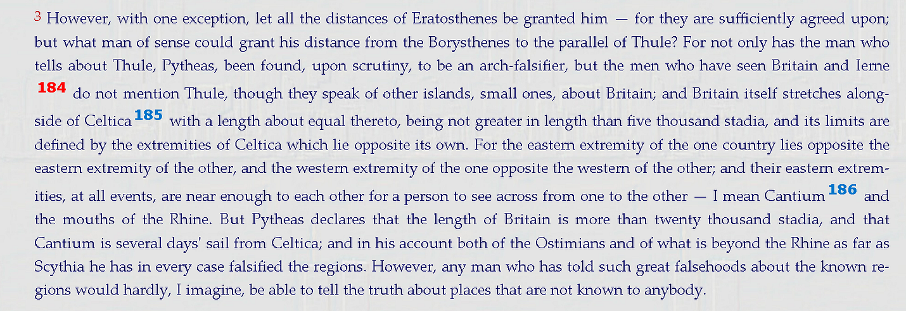
He also describes Britain as having islands around it (“British isles”, in Greek, naturally enough) and then separately mentions Ireland. He’s not very complimentary about Ireland or the Irish either, to put it mildly. Other than to clearly show an understanding that the inhabitants of Ireland (Ierne) are not Britons.
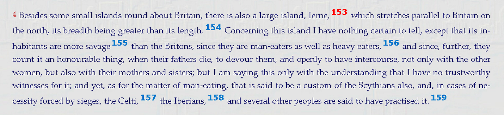
In other places he talks about Ireland being the end of the world and the limits of human habitation, and that he doesn’t even know how far it is from Britain to Ireland (Book 2, Chapter 5, Section 8).
the distance that should be set down for the stretch from Britain to Ierne is no longer a known quantity,
So, is Ireland in some collective “British Isles” that Strabo or Siculus write of? Not unless you’re already determined to read Strabo and Siculus that way. It’s hard to argue that Strabo is defining a collective unit of Britain and Ireland when he says he doesn’t know how far they are from each other.
Strabo also talks about Pytheas describing Thule as being the northernmost of the Britannic Islands, though he’s VERY sceptical about the story. Modern historians are pretty positive that Pytheas’ Thule was Iceland.
Cunliffe says that the evidence that Thule is Iceland ‘seems unassailable’. (Cunliffe 2001, p130). Breeze and Watkins are of the same opinion (Pytheas, Tacitus and Thule, 2018, The Society for the Promotion of Roman Studies).
So….Iceland was in the British Isles……
Meantime, the Romans did eventually get to Britain. And it’s clear that the Romans didn’t use a collective term for Britain and Ireland. Nor did people in Europe after the Romans.
Caesar, the first serious Roman to get to Britain, talked about Britain quite a bit and mentioned Ireland as a separate place. No British Isles. Britain and Ireland are, in Caesar’s telling, two quite separate places. No British Isles. Also not mentioned on Wikipedia.
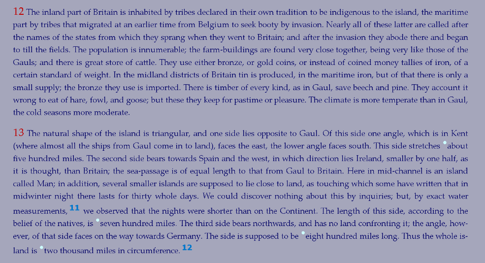
Ptolemy, writing in the 2nd century AD, did call Ireland a British isle. It’s important to note a few things though.
One is that the Greek world (and Ptolemy — while a Roman citizen — was Greek, wrote in Greek, and lived in the Hellenistic world) had no ongoing contact with Britain or Ireland after the Romans expanded into the west and the western Roman world didn’t read Greek writers. People speculate about the sources Ptolemy used, but we’re not sure. However, we are sure that Ptolemy was not read in or much known (he was known of, as were his works. The works were not known in the west) in western Europe until much MUCH later. At least 1000 years later.
And remember, despite his later fame during the Renaissance, Ptolemy also thought that the earth was the center of the universe and that the Indian Ocean was a closed sea, so his word is not exactly definitive. And in terms of Ireland and Britain he might as well have been talking about the moon.
In fact, it seems no-one in Britain or Ireland or even Europe was calling Britain or Ireland the “British Isles” until the mid 1500s when it suited the Tudors to take some ancient terms and use them in support of their political project at the time.
You will read in many books and articles that the term was in use all through the Roman Empire and the middle ages. It just isn’t so. You’ll read that all of the writers I mention below talked about the British Isles. It’s simply not true.
What happens is that modern writers read those older writers talking about Britain and Ireland separately, and the later writers retroactively describe that as being about the British Isles. That had become the term to use in the intervening centuries since the early texts, but it’s not actually in the old texts themselves.
Again, the original texts actually talk about Britain and Ireland separately. It’s only later retroactive description that makes it “British Isles”.
Similarly with medieval maps. The Hereford Mappa Mundi is often said to contain a map of the British Isles. A quick google search should confirm this idea. But there is no mention of any such term on it or other similar maps — not on the actual maps. The word Britannia is there, or Albion. And also Hibernia or Scotia. But no collective term or description.
We do start seeing “British Isles” once we start having translations of Ptolemy in the early modern period, mostly from the mid 1500s. But only then.
But let’s go through this century by century.
Pomponius Mela in the mid 1st century is particularly often said to have used the term Britannia or Britanniae or “insulae Britanniae” to describe Britain and Ireland together. I don’t know why since there is no such mention in the actual text of Mela. Instead he describes Hispania and then Britain and then Ireland all quite separately. See for yourself here. No collective British isles. Just separate descriptions of “the islands Britain and Ireland”. He’s about as late as it gets in any case.
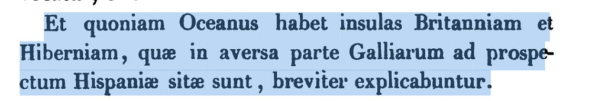
Cassius Dio in the 2nd century wrote a History of Rome. He talks quite a bit about Britain in relation to Julius Caesar’s invasion and later in relation to Claudius’ invasion. No mention of Ireland and no British isles. He does mention how the earliest Greeks knew nothing of Britain and how later Greeks didn’t know if it was an island or a continent.
Similarly Solinus described Britain and Ireland in the 3rd century. No British isles. Just separate descriptions of Britain and Ireland.
Solinus went on to become very popular in the middle ages and into the Renaissance. And no “British Isles”. He does talk about the islands around Britain and mentions Ireland as being the next biggest. But he doesn’t talk about any collective unit.
Orosius wrote a text on Europe in the 5th century. Descriptions of Britain and Ireland, indeed. No British isles. Just separate descriptions of Britain and Ireland.
St. Patrick wrote about Britain and Ireland in his “Confessio”. No British isles. He also wrote Epistles to Britain at about the same time. No British isles.
(Similarly, though they occupy this whole period and I won’t mention them century by century, the Irish Annals also don’t talk about Ireland being a British isle. There is one mention of Vikings raiding islands of Britain. Yes. Britain has islands. Iona. The Western Isles. There’s no description of Ireland being a British isle, despite the valiant attempts of Wikipedia to claim otherwise.)
Gildas wrote in the late 6th century about the fall of Roman Britain. Rare mention of Ireland, lots of Britain, no British Isles.
Isidore of Seville — one of the Middle Ages’ greatest scholars who lived in the 6th and 7th centuries — mentions Ireland and Britain on the same page of the Etymologies where all the world’s islands are listed. No British Isles. Just separate descriptions of Britain and Ireland. You’ll often read how Isidore describes the British isles. But it’s not true.
The Venerable Bede, a writer of early England in the 7th and 8th centuries, talks about Britain and Ireland. No British Isles. Just separate descriptions of Britain and Ireland.
Adamnan’s “Vita Columbae” from the 7th century is a biography of Columba and is one of the earliest descriptions of life in early medieval Ireland and Scotland. It describes Britain and Ireland. No British Isles.
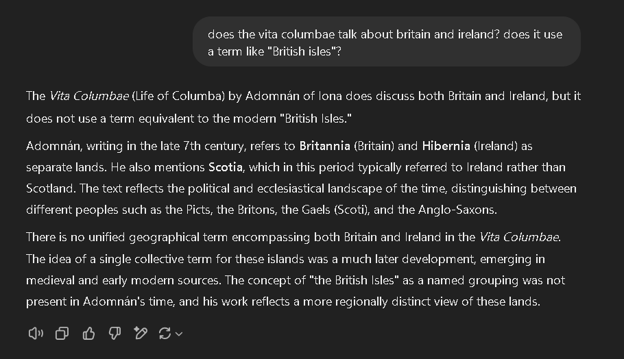
Similarly, the 7th century “Vita Columbani” by Jonas of Bobbio is a biography of Columbanus. Again, Britain and Ireland, but no British isles.
There is one ambiguous mention in Dicuil in the early 9th century. He mentions “insulis Britannicis”. Claiming that this text includes Ireland needs a brave retroactive assumption. It does seem that he’s talking about Britain and its own smaller islands. Here’s the text. Here’s a translation and conversion of the Roman miles into modern units.
Importantly, the east-west width he gives in that section is — as for other writers using similar descriptions — about right for Britain and could cover much of Gallia Comata, but is way too low for Britain and Ireland together. And the Pliny measurement he mentions is even narrower, indicating even more that it’s only Britain and its own smaller islands that are being described. Britain is about 300 miles wide, about in line with the text. Britain and Ireland together are about 166% of the Dicuil numbers and about 180% of the Pliny numbers. As for the length, the Dicuil and Pliny numbers are long enough to cover all of Britain and bring you down into central France. The distance needed to cover Aquitaine as well is about 117% of the number given. That seems more reasonable as an error than 166% or 180%.
Dicuil also talks about Ireland (Hibernia) and Britain quite separately in the same book. For instance here he talks about Ireland and its islands and Britain and its islands, all separately. Cutely, he calls Ireland “our island”.
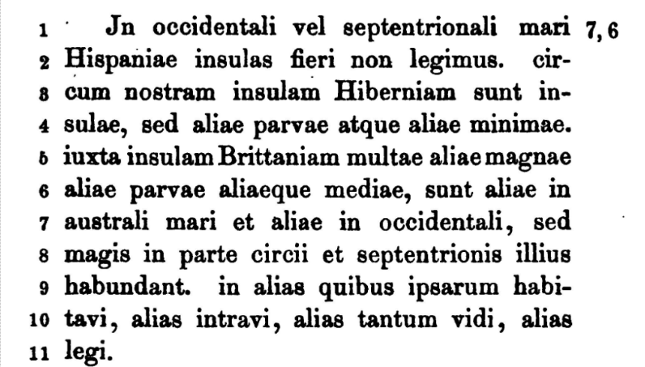
Here’s a translation of that last section.
Nennius’ book “Historia Brittonum” was written in the 9th century. He was Welsh. No British isles. Just separate descriptions of Britain ad Ireland.
There are also the various minor Latin texts gathered by Riese and later Schnabel. These include the “Divisio Orbis Terrarum”, which is hard to place exactly, but let’s say 9th century. An adaptation of earlier works and certainly overlapping a lot with Dicuil, though probably because he referred to it — not the other way around. There is also the “Cosmographia” or the “Cosmographia of Julius Caesar” by Julius Honorius (4th or 5th century).
And finally the Dimensuratio Provinciarum — a text supposedly based on Agrippa, though it’s hard to be sure. That is often dated to the late 4th century though again it’s hard to be precise.
The Divisio repeats the section about Gallia Comata and the “insulis Britannicis” mentioned earlier with Dicuil. It lists similar dimensions and the same likely meaning that this term refers to Britain and its islands and not to Britain and Ireland.
The Cosmographia describes Britain and Ireland quite separately. It calls Britain an island of the ocean.
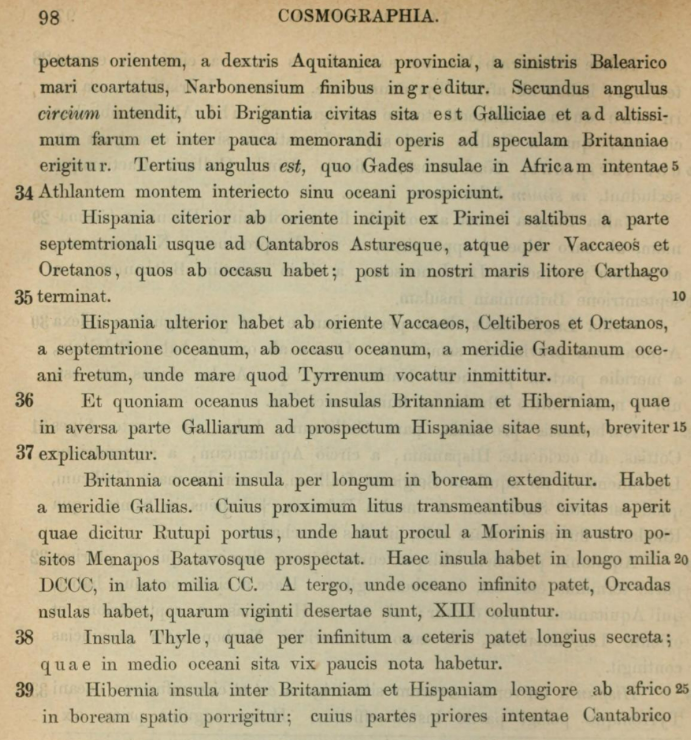
No “British Isles” there either. It also lists the islands of the western ocean, listing Britain and Ireland and several others all quite separately.
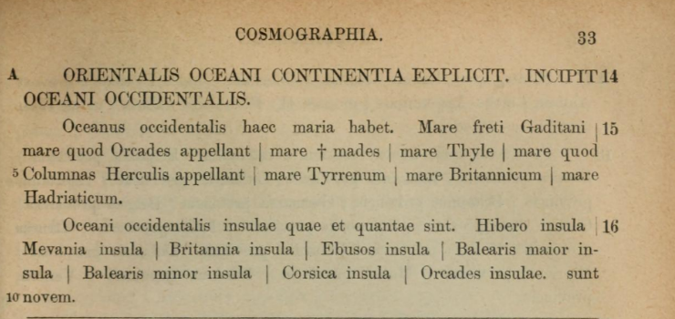
The Agrippa is more fragmentary, but does include a section on Britain that is interestingly similar to the sections above talking about “insulis Britannicis”, and with interestingly similar dimensions. Britain, clearly on its own this time, is 300 miles wide. This aligns well with the dimensions of “insulis Britannicis” mentioned above. Wide enough for Britain on its own. Not even vaguely wide enough to be Britain and Ireland together.
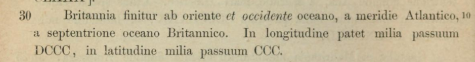
Basically, no hint that Ireland is part of any “British isles”, unless you’re going back in time and retroactively fitting your assumptions into place.
Another hard-to-place book is the Patrologia Latina, a collection of very many church writers from the early church through to the late Middle Ages. There are THOUSANDS of pages in the collection done by Migne in the 1800s. Extensive news from Britain and from Ireland. Extensive mention of the island of Britain. Mention of the start of the Viking age with the attacks on the coast of Britain. But no British Isles.
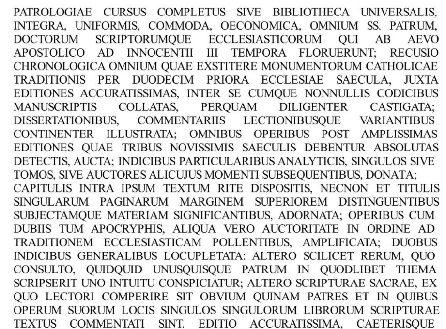
Onwards…..
Adam of Bremen writing in the 11th century also writes about Britain and Ireland. He was from, ehm, Bremen. But no British isles. Just separate descriptions of Britain and Ireland.
William of Malmesbury’s history of the Kings of the English from the 11th century? No British isles. Just separate descriptions of Britain and Ireland.
Geraldus Cambrensis (Gerald of Wales), writing in the 12th century, gives a detailed description of Ireland in his book “Topographia Hibernica”. No British isles. Just separate descriptions of Britain and Ireland.
Ralph of Dicetus’ book “Imago Mundi” was written in the 12th century while he was Dean of London. No British isles. Just descriptions of Britain and barely a mention of Ireland.
There’s also Honorius’ “Imago Mundi”, also from the 12th century. This was a very popular book and appears in multiple versions. Some mention Britain and Ireland and several other islands under the category of Gallia Belgica (this one). Others list Britain and Ireland in a section titled “Britain”, like this one or this one. The chapters or sections in the whole thing seem flaky. Constantinople is not mentioned at all in some versions, is included in “Lower Germany” in another (page 137), and in Thrace in still another (mentioned in the previous link).
The earliest version is from the 12th century — so pretty contemporaneous with the original writing — and doesn’t use chapter or section headings at all, just listing Britain and Ireland and England and Tanatos as islands in the ocean opposite Spain. In any case, no “British Isles” in any of them.
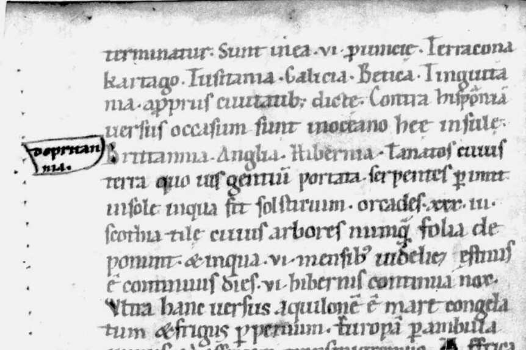
Roger of Hoveden’s book “Chronicles and memorials of Great Britain and Ireland during the Middle Ages” was written in the 12th century. He was an English chronicler. No British isles. Just descriptions of Britain and barely a mention of Ireland.
Henry of Huntingdon wrote his History of the English (modern translation) in the early-mid 12th century. Lots of discussion of Britain and Ireland. No British Isles. There’s also an older version here.
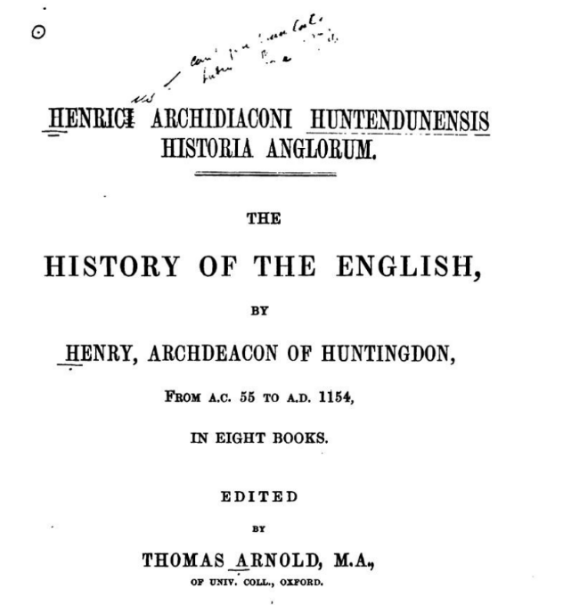
Geoffrey of Monmouth wrote the history of the Kings of Britain in the 12th century. It’s full of fanciful tales, with Kings of Britain conquering Ireland and Iceland and Wales and Scotland and Norway. No British Isles. Just separate descriptions of Britain and Ireland.
Matthew Paris’ “Chronicles” from the 13th century are similarly unproductive. Frequent mentions of Britain and Ireland. But no British isles. Just separate descriptions of Britain and Ireland. He was another English chronicler.
The Scottish chronicler John of Fordun wrote a history of Scotland in the 14th century. He calls Britain and Ireland “islands of Europe”. No British isles.
Roger Higden’s Polychronicon in the mid-14th century writes about Britain and Ireland. No British Isles. There is a place where he talks about the island of Britain (in latin) which is occasionally mis-translated to try to claim he’s talking about British Isles. He isn’t. There’s also an old English version and a more modern English version in this text, so it’s very clear that he means the island of Britain, singular. The link is to the specific place where he uses the term. And here’s the original old English translation, with apologies that a few of the letters don’t paste accurately.
“I haue y-kast and y-ordeyned, as I may, to make and to write a tretes, i-gadered of dyuerse bookes, of te he staat of fe yldndd of Britayne, to knowleche of men fat comef after us.”
Higden says himself that a lot of his text is based on Cambrensis, already mentioned above. Also worth noting that the translation of Higden into Old English doesn’t insert the idea of “British Isles”. The introduction to the more modern English translation — in the late 1800s- talks about how Higden describes the British Isles….when he does no such thing.
Roger of Wendover wrote a history of Britain called the “Flowers of History” in the 14th century. No British isles. Fairly frequent and separate mention of Britain and Ireland.
Hector Boece, from Scotland, wrote a history of the people of Scotland in the early 1500s. He died in 1536
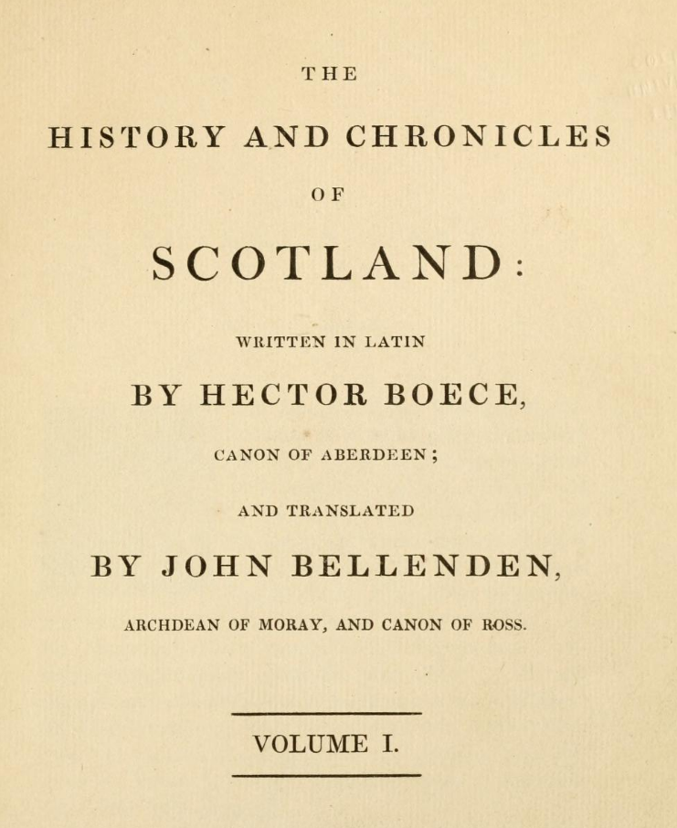
That version is in Scots of the time. There’s currently a modern English version here. No British Isles. Just extensive mention of Britain and Ireland. He gives a fantastical version of the history of Scotland and the Scots.
William Caxton, the famous first printer in England, updated and printed a revised version of Higden’s Polychronicon in the late 15th century. Same story as above. No British Isles.
Caxton also wrote a book called The Description of Britain . He includes Ireland in the book, as he mentions here.
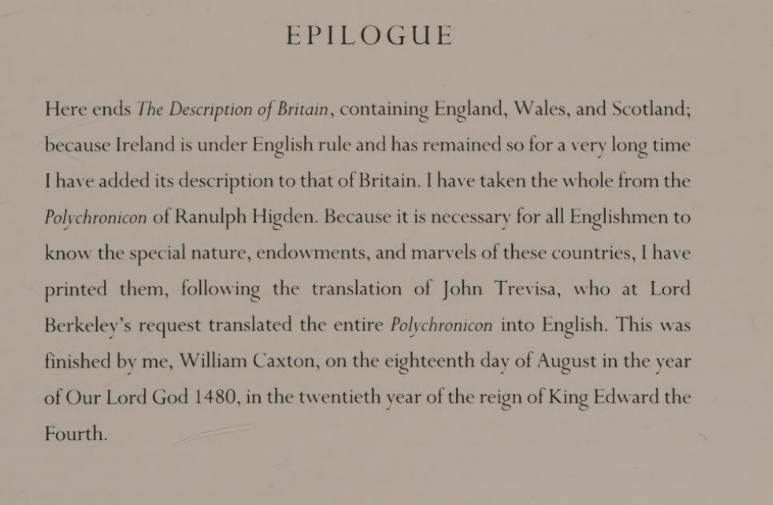
It’s worth noting that Caxton’s book isn’t a straight reprint of the Trevisa translation of Higden’s original Polychronicon. He adds comment and explanation in various sections.
One odd point is that Caxton says there are three adjacent islands of Britain, these being Wight, Anglesea and Man, and he says this is “not counting” the Orkneys. He also separately mentions Thanet (off the Kent coast) as a separate relevant island. This is in line with other earlier descriptions that mention “Tanatos” as an island of Britain. But it’s just odd how he lists the islands. To me, anyway.
As for Ireland, there are several chapters. Caxton starts by saying that Ireland was “under the dominion of Britain”, which was true enough at the time. He’s generally pretty uncomplimentary about the Irish. He’d have fitted right in to the staff at Punch in the late 1800s.
Still, while the modern translator (Marie Collins) repeatedly talks about the British Isles, Caxton’s book makes no such mention.
We’re basically up to 1500 by now. No British Isles. Not for a thousand and more years. Not in Britain or Ireland or the west.
Again, look at the Roman and British writers above — nary a mention.
Now, it’s really important to note that it is common for writers in modern historical literature to say that all the medieval writers above described the British Isles. They didn’t….they described Britain and Ireland. The other term came later and has been shoehorned back in time.
The first appearances of “British isles” in western Europe, essentially ever, start with the rediscovery of Ptolemy, with translations of Ptolemy into Latin and then with widespread circulation of the term.
It’s worth mentioning that there are also Arabic mentions of there being 12 “islands of Britain” in the sea of the Romans. They are casting back to Ptolemy — with the Arabs being the inheritors of Alexandria and all that. The infamous Wikipedia article claims that this meant that the term was somehow in continuous use through the middle ages. Ehm…no. The Arabs translated Ptolemy. And that’s it. No-one in western Europe was using Arabic geographical terms.
The key document which brings the idea of “British Isles” back in to the west is Ptolemy’s “Geography”, which mentions Ireland as a British isle — alongside Albion. He had earlier used the famous “Little Britain” term, but then later used a version of Hibernia. His use of “Little Britain” for Ireland was unique in the ancient world. An anomaly he corrected on his own. More recently Wales is “little Britain” in Irish. And Great Britain distinguished itself from Britanny. Bretagne. Grande Bretagne. Ptolemy was long dead when this was going on.
However, since Ptolemy is one of the key sources used to claim that the term “British Isles” had been in continuous use for millennia, it’s important to consider a few things about Ptolemy.
Ptolemy had written in Greek and had never been much read in western Europe. If, essentially, read at all in western Europe. His works were not availalble or known in the west. People knew about Ptolemy, but by reputation only.
Then, Ptolemy had vanished even in Greek. The Greek text was thought for a long time to have been lost entirely. The only place Ptolemy was known was in Arabic, so his terms certainly weren’t in use in western Europe. And as we can see above, other writers were calling Britain and Ireland just Britain and Ireland, separately.
A copy of Ptolemy in Greek was discovered in 1295. Even then, the Ptolemy text did not have the maps you often see as being Ptolemy’s maps. It didn’t have any maps at all. The earliest versions of maps based on Ptolemy were made by Planudes and now exist probably only in two places. This is one of them, in the Vatican library.
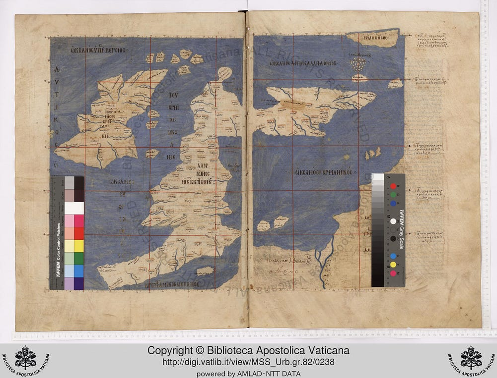
You can see Thule in the top-right corner and also see that these were not accurate maps of Britain or of Ireland. Also Ptolemy had repeated an error by Agricola in considering that Thule was Shetland (see Breeze and Wilkins again)
No “British Isles” on that version either.
The first translation into Latin was in the 1400s, but not well known or widely circulated. It also didn’t contain any maps. The first printed edition was in the late 1400s in Bologna. There were maps in that and later editions. Those were most likely done by Nicholaus Germanus. No “British Isles” on those.
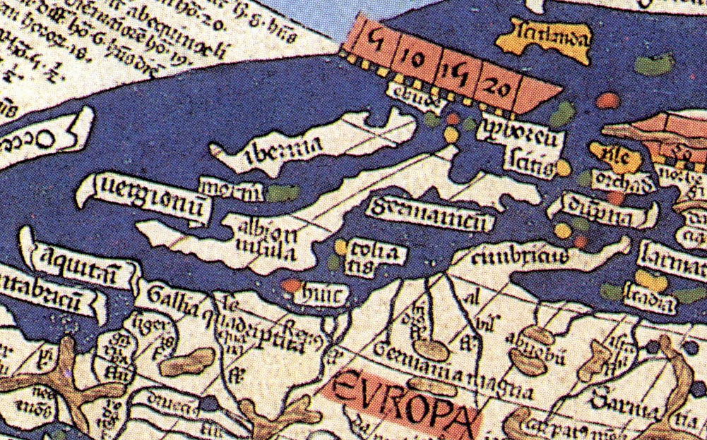
As a side note, translations of the Ptolemy from Greek into Latin also caused some later scholars to wonder whether the “Pretanic” of the early Greeks and of Ptolemy were in fact completely separate from the later “Britannia” of the Romans.
It’s a minority view, for sure, but there is very little in the way of solid ground for anyone to stand on when it comes to these terms. It’s certainly another angle. (Read Rhys, Cunliffe, Oppenheimer and Thomas for more, if you really want to)
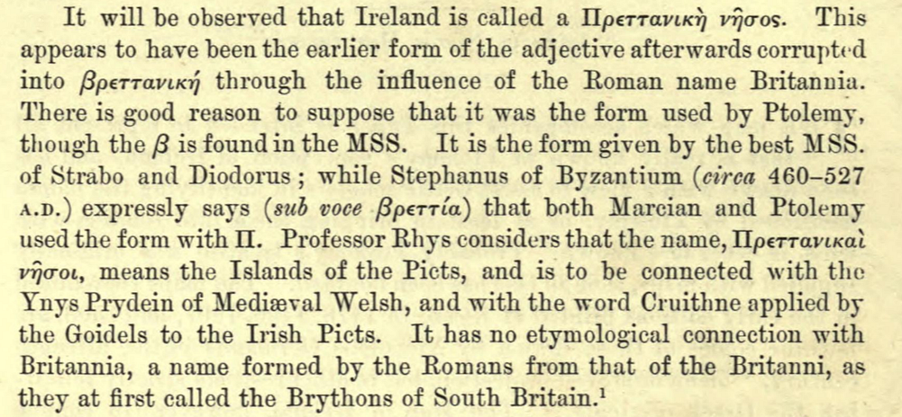
Through the late 1400s, people are trying to put maps together. There are a variety of attempts. This here below is the Benincasa from 1467. No “British Isles”.
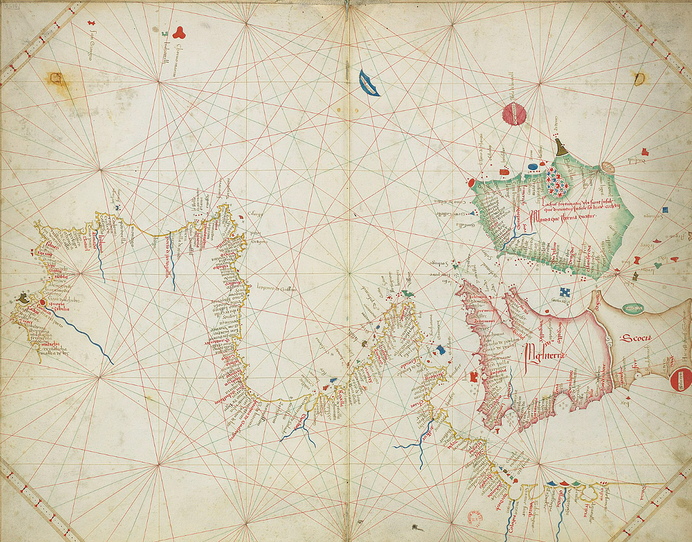
It’s in the 1500s that British Isles pops up more, particularly in the mid-late 1500s as printing became more widespread and as Ptolemy became popular. As we saw above, Caxton didn’t use the term in the late 1400s.
This matches a critical period in Irish political history, as mentioned above. A fortunate or unfortunate coincidence, depending on your point of view.
In any case it’s only in the 1500s, during the Tudor (those aspiring Britons) conquest of Ireland that the term gets used, reapplied, and then repurposed in politics. Other resurrected Ptolemaic terms didn’t stick (more below).
Map making has been pushing ahead, with the Portugese, Genoese, Catalans, etc, all in full flow. The Lopo Homem maps of the world are pretty good. No “British Isles” in any of them.
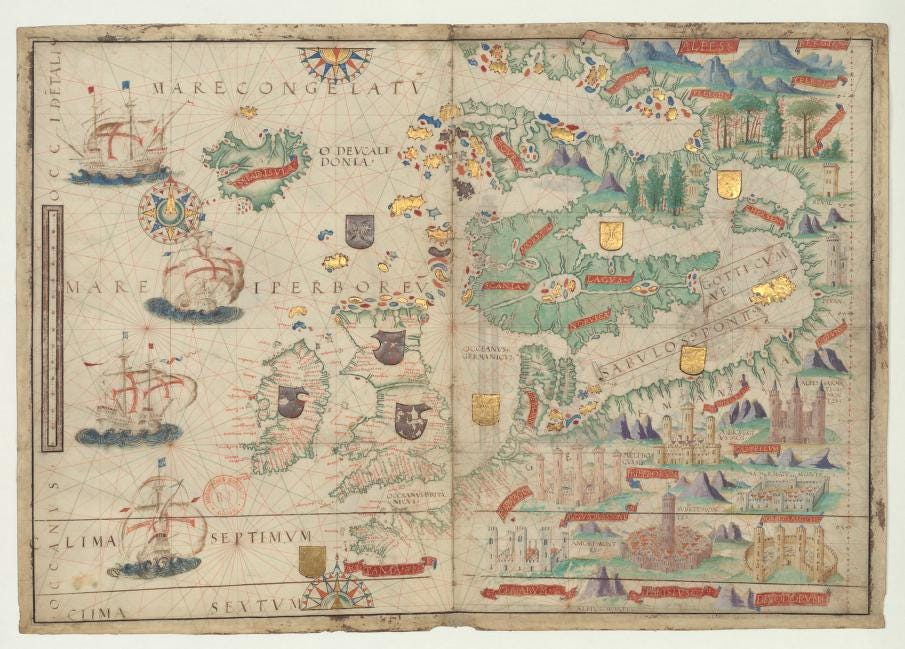
His 1519 world maps (see here) are perhaps as good as the later Mercator (see below), and without some of the Ptolemaic mistakes.
In 1529 we see Spanish maps with a pretty decent world view. You can see the full map by clicking on the caption of the zoomed in section shown below. No “British Isles”.
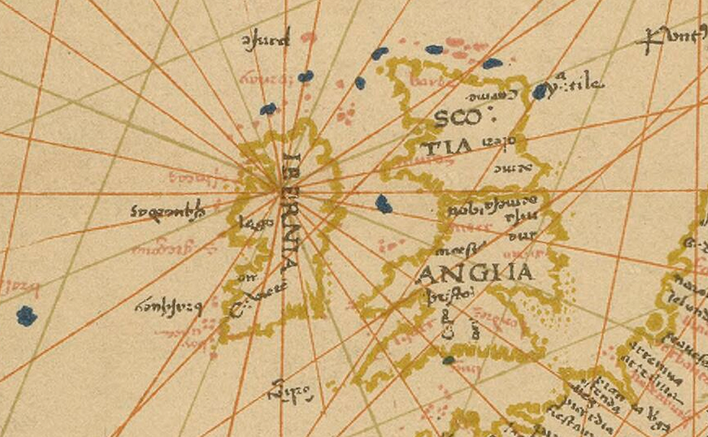
Similarly, we have maps like this one from 1536. The portolan by the Conte di Ottomano Freducci. Scotland and the north and west of Ireland are pretty flakey, but no “British Isles”.
However, then Ptolemy really starts to appear.
Mercator’s heart-shaped map of 1538 is one of the earliest attempts to incorporate Ptolemy and more modern learning.
On this map you can see Britain is “Albion”, and the words “Insule Britanice” are placed below Ireland and Britain. This is essentially Ptolemy, resurrected. Similarly the “Cassiterides Insulae” are shown off the NW coast of Spain, though these don’t exist. Or they’re possibly the Scilly Isles, transported south several hundred kilometers. Again, Ptolemaic mistakes, resurrected. The depictions of everywhere are crude in the extreme and there’s very little detail compared to the earlier maps shown above. The Ptolemaic kink in Britain is also repeated although by that time there were many good maps of Britain (several above).
Beyond that, the ocean west of Ireland is the “Oceanus Deucalidonius” (Scottish Ocean). Much of Canada is listed as “Baccalearum Regio”, or the region of codfish. The Newfoundland cod trade was big, by then, but that’s not what Canada — or even Newfoundland — are called nowadays. There are signs of recent (at the time) exploration, with the “Insulae Corterialis” appearing off the coast of Nova Scotia. These are apparently named after the Portugese “Corterialis” family, which is fascinating, and could be a variety of small islands — none of which are still named like this.
At a bigger scale, Portugal is Lusitania, France is Gallia, Germania extends into what is now Poland. Poland is small, barely there. Sarmatia is big. Much of mainland Europe uses the Roman Provincial names, with Lugdunesis labelling much of northern France. And let’s be clear….it was already France in Mercator’s day, and not a Roman Province. The 1536 Mercator is not a great map in many ways. But Ptolemy certainly rears his head.
Then, if we move forward another few years, Sebastian Munster’s “Cosmographia” was an influential text. It’s from right in the middle of the 1500s. Early in the book he splits Europe into multiple regions. One of them is “Albion & Hibernia”. He then mentions that Ptolemy made maps of some of them, which is what he gets to a couple of pages further down.
He then follows with adaptations of the earlier Ptolemy maps. There he quotes Ptolemy’s description of Ireland as a British isle. However, he does it in the context of “this is what they were called in ancient times” (Anglia et Hibernia appellatae sunt olim Insulae Britannicae, sic enim et Ptolomaeus vocat eas), and makes it very clear that he is following the Ptolemaic division in the following section….and indeed continues by doing exactly that. Ten regions of Europe in which, for instance, Bavaria is not in Germania.
He also says that England used to be called Albion, because of the white cliffs. All true. Ptolemy did say that. Munster, however, had called them “Albion and Hibernia” when he wasn’t quoting Ptolemy.
The next section is the first of the ten Ptolemaic divisions that he will cover. And this is where the description “De infulis Britannicis, Albione, quae eft, Anglia, & Hibernia,& de ciuitatibus earum in genere”. That translates to “about the Britannic islands, Albion (which is England) and Hibernia, and on their cities in general”.
If you’re wondering where Scotland is, Munster does cover it further down. He says, more or less, that Scotland and England used to be called one thing, and that was either Britannia or Albion. He mentions that “time passed and things greatly changed” and that Scotland became separate. Things had indeed changed a lot since the Greeks made those descriptions.
Then, the famous 1564 Mercator map repeats the description included by Munster, about how the islands used to be called the Britannic Isles, by the ancients.
This map has a big step up in the quality of the information on both Britain and Ireland. Mercator says that he was given the information by a “amicus quidam singularis”, an exceptional friend, who asked him to prepare it for wider distribution…and that he could not refuse.
There has been academic speculation about who this “exceptional friend” was. John Dee, who had spent time working with Mercator before, is one candidate. It may also have been a Scot, John Elder, or others. It’s impossible to know. It is very well attested that Dee and Mercator were colleagues and had spent many years in regular contact. But in any case, a British friend.
The 1564 map is titled “Anglia, Scotia, & Hibernia, nova descriptio”, or “England, Scotland, and Ireland, a new description”. It is not titled “British Isles”.
The map does mention that the ancients used to call the islands the Britannic islands. In Latin it says “veteres appellarunt has insulas britannicas & irlandia quidem proprio nomine hibernian, angliam vero silum cu stotia vocarunt brianniam & albionem.”
This translates to “The ancients called these islands the Britannic Islands, and Ireland indeed by its own name Hibernia, but England together with Scotland they called Britannia and Albion.”
This is perfectly in line with the earlier description by Munster…and close indeed to what Pliny had said 1500 years earlier.
There is a long block of text in one section where Mercator talks about making a description of the Britannic islands (“Britannicarum insularum).
In it he gives a history of these “Britannic Isles”. Basically he quotes Hector Boece, a Scottish writer mentioned above, who died in 1536 and who had written a rather fantastical history of the Scots. Boece doesn’t talk about Britannic or British Isles. Mercator mashes Boece and Ptolemy together. Or maybe his special friend does. It’s less likely that Mercator had read Boece than a Scot or Englishman.
Plus, it’s not clear that the text about the “Britannic Isles” includes Ireland at all. There’s mention of how the Scots came to Scotland through Ireland, but no other mention of Ireland. And Ireland was — as Mercator and Boece both knew well — inhabited and had history. None of it is mentioned.
Then it’s just a few years to 1570. That’s when Dee’s Dutch colleague Ortelius — who was also a friend of Mercator and also worked with Camden — has Britain and Ireland as “Britannic Isles” in Latin in his significant “Theatrum Orbis Terrarum” in 1570
This map is clearly modelled on, if not copied directly from, the earlier Mercator mentioned above, but now with the additional explicit heading that Ireland is a Britannic isle.
It’s not “this is what the ancients used to call it” any more.
Also important to mention that the description is “Britannic”, even now, not “British”.
Meantime, back in Ireland, the Tudors were intensifying their attempts to control Ireland. Attempts that provoked significant rebellions by long-standing Anglo-Irish Lords (the Desmond Rebellion and the Butler Revolt). At the same time as Ireland was first being called “British” on maps, Ireland was being made politically British on the ground.
And not peacefully.
(There are some particularly nice examples in the Ortelius atlas of how names change too, for political reasons. The Netherlands is included in ‘ Germania ’ and is called ‘ Germania Inferior ’. That was the name of the Roman province. Very classical. But, at the same time, would you insist on that name nowadays? Dat zou ik vandaag niet proberen. I confess I would not. Similarly, the whole of South East Asia and much of China is included as “ East India ”)
It’s worth mentioning that we do also see some other of Ortelius’ own maps of Europe not mentioning “British Isles” at all.
There were also other maps being drawn that did not use the term “British Isles”, indicating again that it was not the universal term at the time.
This first one is by an English scholar that did not call Britain and Ireland anything like “British Isles”.
This one is a 1562 copy of a map drawn by George Lily, an English Catholic priest, in 1546. While the modern sales page for the map calls it “British Isles”, the map itself says no such thing. The map itself says it’s a map of Britain with two kingdoms (England and Scotland) with Ireland adjacent. There’s a variant of the same map in the National Library of Scotland, more correctly called a map of Great Britain and Ireland and dated 1556.
There’s another version of essentially the same map by Lily that has been called “The first separately printed map of the British Isles as a whole”.
Yet the title of the map is ““A new description of the islands of Britain, which now contain the kingdoms of England and Scotland, together with adjacent Ireland .” The description is quite clear. It’s the islands of Britain (there’s a LONG list of islands in the box in the low center), with Ireland adjacent. Again, Ireland is not in the British Isles on this map.
The extended description on this version of Lily also describes Thule as being ruled by the Scots and being at 63 degrees north. Iceland is at 63. The Faroes are at 61–62. Shetland even lower. So again, the geography is dodgy anyway.
Similarly, we can look at the 1548 Paolo Giovio book, the “Description of Britain, Scotland, Ireland, and the Orkneys”. The book references its sources as including Tacitus, Pliny, Ptolemy and several more. It talks about Britain and Ireland for hundreds of pages. No British Isles.
Or we can also look at the 1550–1564 Nowell/Burghley “Atlas of Sicily, England, Wales, Ireland and Scotland” in the British Library collection.
This includes a detailed map of Britain and Ireland, actually titled “Cart of England, Ireland, and Scotland” in the book and then “A general description of England and Ireland” on the map pages themselves. No mention of “British Isles”. This has possibly more information on Ireland than the 1564 Mercator, though it’s not as well executed.
Anyway, the term “British Isles” makes its first known appearance in English not long after Ortelius, when John Dee himself starts talking about Brytish Iflands and British Iles in his 1577 book. And with Dee talking extensively about the British Monarchy and the British Empire in the same book, it’s hard to sustain a claim that “British” is a geographical term, right there at the beginning.
But now, by 1577, within just a few years, we’ve gone from it being an ancient term to it being the current term. It also shifts from “Britannic” to “British”. And one of Tudor England’s main propagandists for Empire is right in the middle of it, and it’s happening right in the middle of the Tudor Conquest of Ireland.
And again, the English language was centuries old by this point. If the term “British Isles” was the common term before this point, it’d be in writings from the previous centuries. It isn’t. It appears in the late 1500s in Dee’s orbit. Caxton above is merely one of many examples where the term is not present.
On mainland Europe, there were still people making maps without “British Isles”, for a while. This orbis terrarum covers the world in two hemispheres. It’s by Petrus Plancius in 1594.
None of the versions of the Hondus map of the 1620s (a few versions here below) which the British library also credits to Mercator) makes any mention of “British Isles”.
However, change started to be rapid from the 1570s on. The war in Ireland and the political aim for the Tudors to conquer Ireland were both intense.
By the 1580s William Camden’s “Britannia” was talking about Britannia (no isles now, mind you) as being England, Scotland, Wales, Ireland and the surrounding islands. The claim was under way. Eddie Izzard springs to mind.
While there were still people not using the term, if you came back in 100 years, French map makers were calling Ireland part of the British Isles. Britain ruled Ireland and any and all detailed information about Ireland came through Britain.
Also, 100 years later, the term had by then — supposedly — been in continuous use for millennia and. That claim still persists. People still believe that.
So, while the terminology from Ptolemy was not even known and certainly not used in the western world before the 1500s, it was definitely picked up and used by the Tudors and was politically useful to the Tudors and the Stuarts in the 16th and 17th centuries AD. And beyond.
However, observing the selectivity of the take up of Ptolemaic terms is interesting. While these newer maps correctly ignored the shapes from Ptolemy’s maps, and while other placenames or terms in Ptolemy’s maps were not used either because there were new names (France did not exist in Ptolemy’s maps, nor England) or because they had long been obsolete (Scythia), the idea of Ireland as a British Isle was politically useful and was made to stick. Particularly as the 1600s progressed and Ireland got on the wrong side of both Cromwell and William of Orange.
It suited the politics of the time very well to have Ireland be a British isle. But it’s not hard to speculate what might have happened if the Battle of Kinsale had gone differently. “British Isles” could have remained what it had long been. An unused ancient term. Like Scythia.
Similarly, or perhaps oppositely, after centuries of bouncing around between Iceland and maybe Norway, Thule disappeared from modern maps until the term was later applied to a location in Greenland.
The Western Ocean became the Atlantic. The British Ocean was briefly considered as the name for the Atlantic too, but instead lingered in the space between England and France until that became the English Channel.
What Ptolemy called Libya is nowadays (and was to the Romans) called Africa. As mentioned, Scythia is no longer named as such at all, nor Sarmatia. Ptolemy’s Byzantium became Constantinople and later Istanbul. Taprobane became Ceylon and later Sri Lanka. Ptolemy’s Ister is now the Danube. The Pillars of Heracles are nowadays the Rock of Gibraltar and Jebel Musa. The Borysthenes is the Dnieper.
I could go on. And on.
But ask many British people to stop calling Ireland a British isle and you’ll be told that it has always been a British isle and that it must always stay a British isle and they’ll go on about Ptolemy or even about Marcian of Heraclea….seriously. A barely known Greek who copy/pasted Ptolemy will be hauled out as an authority. And everything in between will be ignored. Modern history and Irish objections will be ignored too.
Other names can change, apparently, but not this particular one. This one is special. This one is “purely geographical”.

3. Ireland is one of the British Isles, but no-one is saying Ireland is a British isle. Capitalization matters.
Seriously? Capitalization matters?
You’re trying to tell me that Ireland is a British Isle but not a British isle? Seriously? Or that Ireland is one of the British Isles but that doesn’t mean anyone is saying Ireland is a British isle? Or that it’s part of the British Isles but that doesn’t mean it’s a British isle. Go on…pull the other one. Language has plain meaning.
4. Ireland is in the British isles but it’s not in the British islands.
This is another notion that is widely peddled. That notion is that the term “British Islands” is political but “British Isles” is geographic. It’s also a bit daft, to be honest.
The clique of editors on Wikipedia will tell you that “British Islands” is a term in UK law and that it should not be confused with “British Isles”, since that is supposedly “a purely geographical term”. It’s bollox, frankly. But you try to edit that page and see how you get on.
The page gives the impression that the term was defined in the late 1970s and didn’t exist before that. It’s nonsense. Legally, the term was first defined in UK law in the 1800s and meant “the UK plus the Crown Dependencies of the Isle of Man and the Channel Islands”. That is, you might notice, a definition of what the British Isles were then. Isles and islands are the same thing.
The term “British Islands” was redefined after Irish independence, so as to exclude Ireland. The change was quite belated. The 1970s were quite a while after Irish independence. Not a legislative priority, I imagine, until something came up during the Troubles.
The updated definition basically says “including Ireland if you are talking about the time before independence and excluding Ireland if it’s after independence”.
But the term “British Islands” had been in use for a long time, including in official contexts. It was used as an exact synonym of “British Isles”. Isles and islands are the same thing.
Even the UK Admiralty’s chart 2 was called “British Islands” through much of the 19th Century. And this is BEFORE the definition of the term in Law.
This chart 2 became “British Isles” during the 20th Century and — since 2020 I think — is now called “UK and Ireland”. So yes, “British Islands” == “British Isles”. And yes, the UK Admiralty has removed the term from charts.
Since about 2020 (I’m not sure of the exact date), the Admiralty publishes the same chart 2 as “United Kingdom and Ireland”.
There are also geography books of the “British Islands” where the term is used interchangeably with “British Isles”.
There are mentions of “British Islands” in the UK Parliament, in speeches by the Prime Minister in 1834 opposing the repeal of the Act of Union
There are Fisheries laws talking about the “British Islands”.
There are ALL sorts of books.
Meantime, “the Channel Islands” and “the Channel Isles” are not two different places. They are the same place.
And — to labor the point — they are in the British Isles. And they are in the British Islands. So again, pull the other one.
So overall, have some self-respect and avoid arguing that Ireland is a British isle but not a British island or that isles and islands are different things, or anything equally daft.
Spare us all. Please.
5. It’s Traditional
This is the same as number 2.
So, ehm. no.
6. Then we should rename the Irish Sea, since it touches England and Wales and Scotland.
Ok. This is whataboutery. But let’s run with it.
Let’s start slow. Land and sea, they’re different. People live on the land. They don’t live on the sea. There can be different levels of delicacy around how land and sea are named.
Even then, if you can’t understand the above, should we then rename the English Channel since it touches France? ‘Hmm….the French have done that, haven’t they. They call the same thing “La Manche”.
Which does kinda prove that the names of things are political. Similarly, the name of the South China Sea is not universally agreed. Nor the Persian Gulf.
And, as briefly mentioned above, the North Sea was previously called the German Ocean. It was on British maps into at least the 1850s as the German Ocean before that name was dropped and it was just the North Sea.
The site here https://co-curate.ncl.ac.uk/german-ocean/ gives references as late as 1890 and says that “German Ocean” was widely used until WW1. Sensitivities there too?
But we’re still back to the top point anyway. The land and the sea? They’re different.
It’s also a different argument. If you want to make that argument, off you go.
Plus, as far as I know, the name “Irish Sea” was an English/British invention in the first place.
7. Northern Ireland is British so Ireland is part of the British Isles.
First up, to be fair, Northern Ireland is a delicate topic. It’s why the UK and Irish governments talk about “Britain and Ireland” or “these isles”. They’re trying to be geographical and not political…assiduously avoiding any undesirable political implication.
But then, let’s see. We’ve discussed before how “British” is not exactly a geographical term.
Let’s try both options…political and geographical.
If you consider British to be a political term, then indeed, Northern Ireland could be called British. But similarly, if you consider British a political term then Ireland as a whole is no longer British and Ireland is not a British isle and not in the British isles. Oops.
Let’s clarify. Northern Ireland is, in fact, part of the United Kingdom of Great Britain and Northern Ireland. So you could also call it UK-ish. It’s not a term as commonly used but it’s politically more accurate.
But let’s get back to geography.
Geographically, Northern Ireland is not the north of Ireland. Parts of the Republic of Ireland (what some British people inaccurately call Southern Ireland) are further north than Northern Ireland. Yes, that’s true.
So should we rename Northern Ireland as Northeastern Ireland and rename the UK to be The United Kingdom of Great Britain and Northeastern Ireland. That’d be geographical. I confess I can’t see that being a popular move.
We could try some additional aspects. The Antrim coast is not part of the coast of Britain. It is not, geographically, the British coast. It is unarguably part of the coast of the United Kingdom. But is is not the British coast.
So, again, Ireland is not a British isle even if Northern Ireland is in the UK. Which it is. But let’s take it easy on Northern Ireland. If someone wants to say that Antrim is “in the British Isles” then I, for one, will tread lightly around that.
8. Everyone calls it that.
They used to. But less and less over time.
Find me a recent Michelin Map of the British Isles. Go on. Similarly, National Geographic hasn’t published a map of the British Isles in years. They have occasionally made mistakes in online publications and have changed those names when they were alerted. Various UK government organizations don’t use the term any more. The British OS does, but it’s a company (albeit state owned) and not a government department.
Then, if you use the term around Irish people you’ll find the term challenged. I’m far from the only one. Reasonable people — faced with such a challenge — usually go “Oh. Ok. ‘Britain and Ireland’ then, I suppose”.
Only people determined to be rude to the Irish continue to insist. And let’s be clear, they’re not doing it because of geographical idealism. They’re doing it because they’re knobs.
There’s another reason. Not everyone uses the term “British Isles” to mean what “British Isles” used to mean. The term “British Isles” is often used today to mean “the UK” or “Britain”.
Here’s a genetics project at Oxford University. Like many places, it uses the words “British Isles” and “UK” and “Britain” or “British” interchangeably.
Here’s the Lions Club and the British National Farmers Union.
Here we have the C80 Imray chart. Like the UK Admiralty already shown above, it’s changed title. The 2020 version was still “British Isles”. The 2024? “Great Britain and Ireland”.
Now, in terms of the people who most try to insist that Ireland is still in the British Isles, it’s mostly clearly racist British and Americans trying to create some cockeyed racial solidarity across the Atlantic. Or maybe Russian bots, but the sentiment is the same.
And often they seem exactly the kind of racist asshole that would insist that the Irish are slightly subhuman at the same time as insisting that Ireland is in the British isles. It’s a tad contradictory.
Then there are also the racist assholes who clearly mean “Britain” when they say “British Isles”. That’s fine, if you’re into that kind of thing.
Again, since Ireland is clearly not included in these definitions it’s also clear that — for those cases — Ireland is not a British isle.
Things change. So let’s just be clear about it.
Ireland is not a British isle. Not any more.
It’s not in the British isles any more either.
It’s simple.
Appendix 2: The PS's
p.s. From sad experience, many people who are particularly attached to the term seem to think that anyone objecting to it is a mad Irish republican who spent decades trying to murder innocent civilians. No. Not me. Wrong tree. But bark if you like.
p.p.s. You might try and fail to find much of this on Wikipedia. The British Isles article on Wikipedia is controlled by a small and determined group of Empire men like the guy above. There was actually a project group on Wikipedia a good while back that set out in an organized way to insert the term “British Isles” in to every place they possibly could. They don’t want you to know, for instance, that the term wasn’t even in the OED until 1971. They don’t want you to know any of it. Wikipedia, sadly, is not politically neutral (with the dominant side depending on the article) and its editorial controls are very weak. If, for instance, you try to edit the Wikipedia article on the Birmingham bombings or many other atrocities of the Troubles, you’ll find that a cadre of determined Sinn Fein supporters wants to make sure that the article remains positive about the Provos. The British Isles article is the same, just in the other direction.
p.p.p.s. You might also sensibly ask “Why does it matter?”. Let me try some examples.
My name is “Hugh”. It’s not “Hubert”. I don’t have anything against the name Hubert, but it’s not my name. If you keep insisting it is my name, you’re clearly also insisting on saying something to me. Something unfriendly.
Or if you’re into marketing you’ll know that branding matters. When Russia invaded Crimea in 2014, a lot of people shrugged and thought “Sure it’s all Russia anyway.”
Or on a more bureaucratic note, I’ve heard people saying things like “But doesn’t that apply to Ireland too? Didn’t the whole British Isles leave the EU?”
Or take a British example. The British Royal Family is nowadays called “Windsor”. They used to be called “Saxe Coburg Gotha”.
References?
I’ve been reading Irish history for a long time so believe me or don’t believe me. It is, in the end, up to you. People with a certain attitude will accuse me of all sorts of beliefs I don’t hold and will just be generally unpleasant.
As for specific references, I provided links to the AI responses and the text has links to half of medieval literature. Believe them or don’t believe them. If you want to do the work yourself, have at it. But seriously, don’t start on Wikipedia. What’s there and what’s NOT there in terms of reference on that page is a scandal.
So, start here instead. Google is your friend.
The library at archive.org is fantastic too. I’ve given LOADS of links. As mentioned, all the ancient writers are out of copyright. But seriously, Wikipedia is not to be trusted.